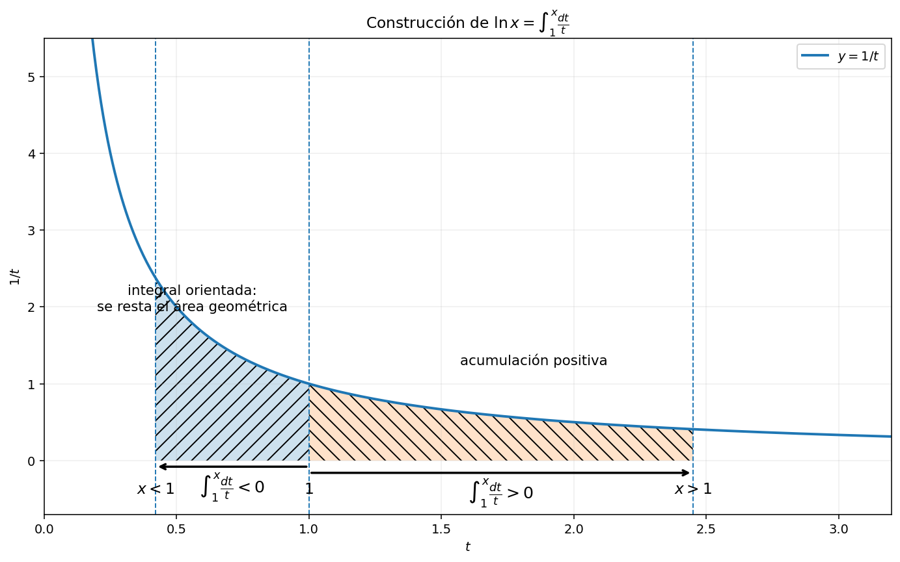
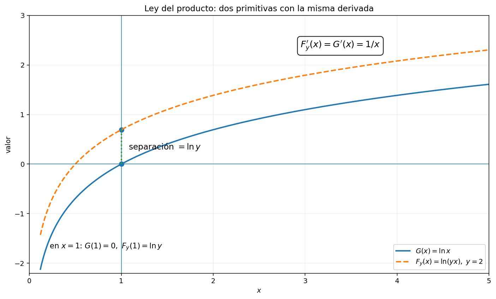
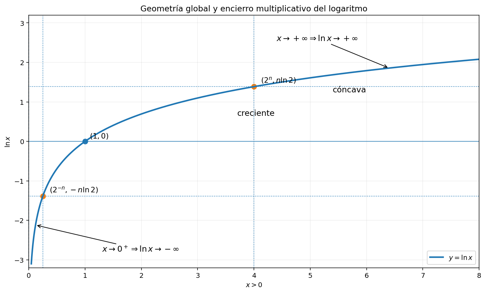
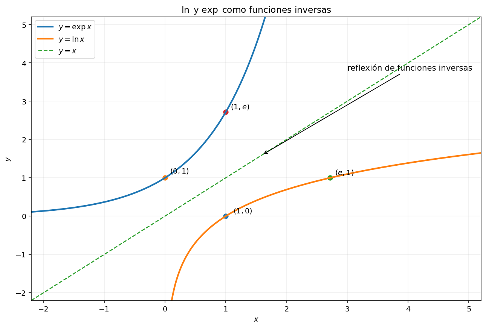
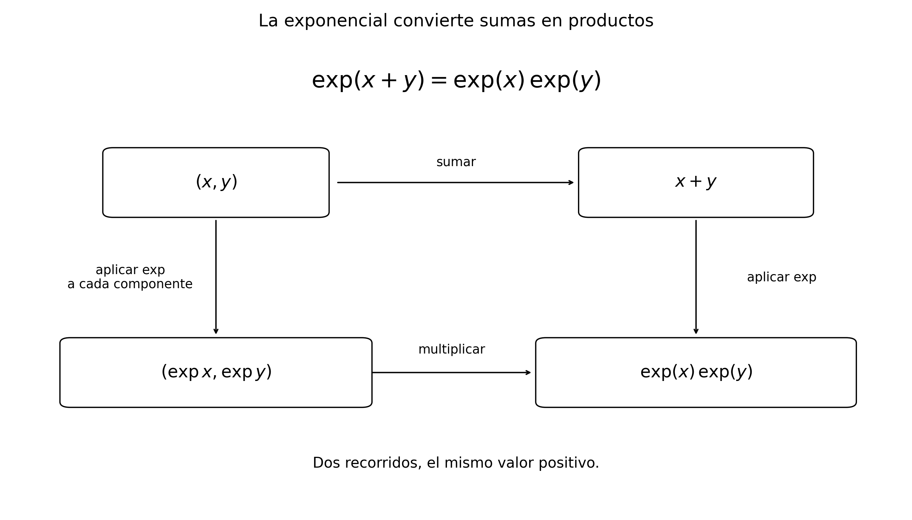
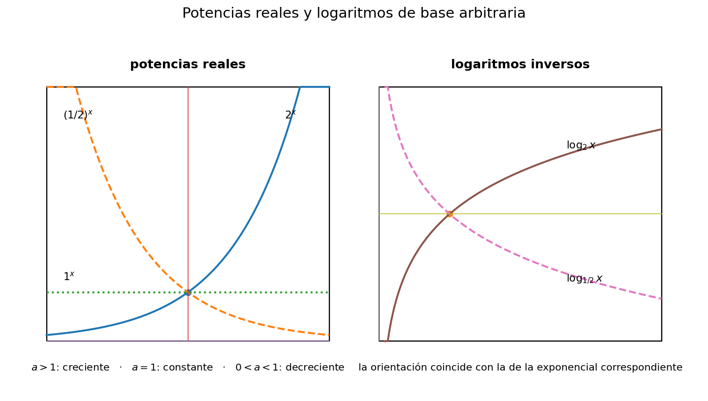
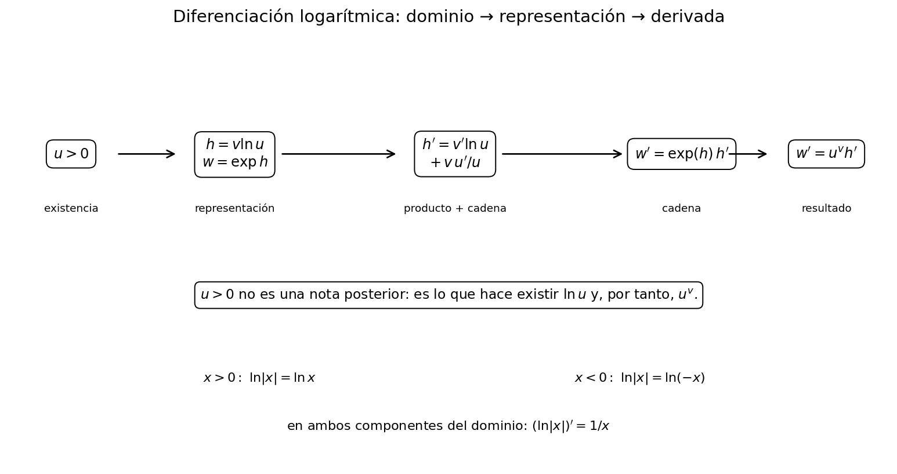
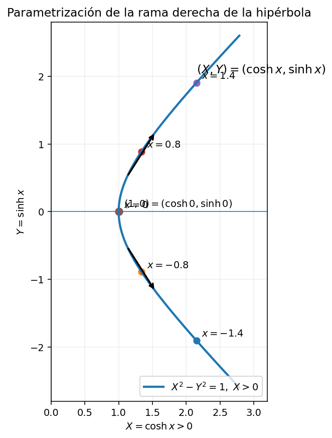
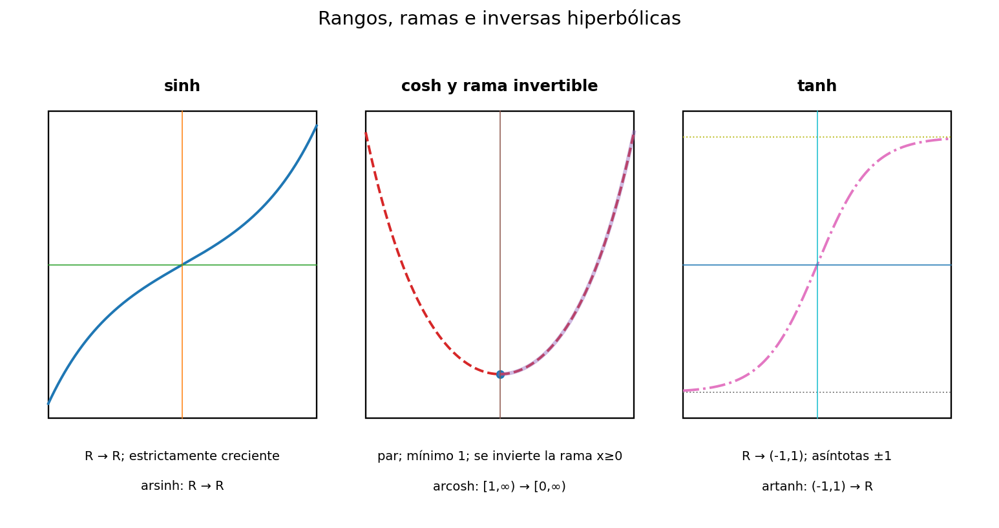
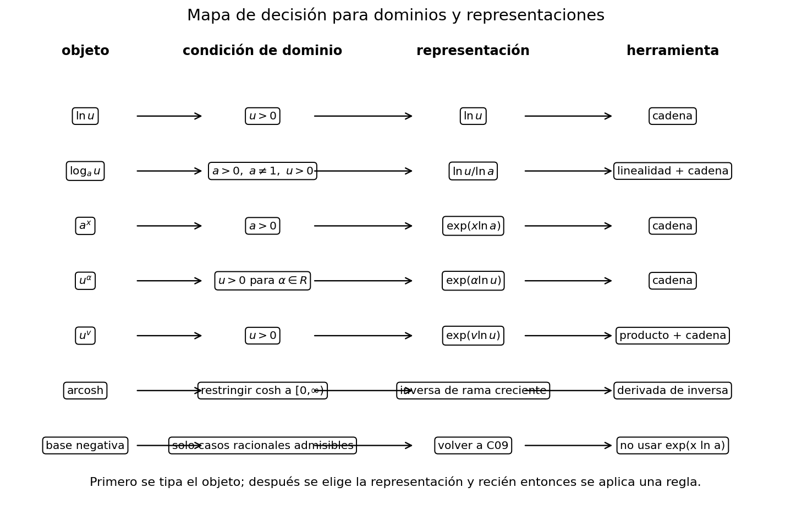

Logaritmo, exponencial y funciones relacionadas desde el cálculo
17 Logaritmo, exponencial y funciones relacionadas desde el cálculo
← Capítulo 16 · Índice del Tomo I · Capítulo 18 →
17.1 Por qué construir una función nueva
El capítulo anterior cambió de manera decisiva la forma de pensar las primitivas. Antes del teorema fundamental del cálculo, encontrar una función \(F\) tal que \(F'=f\) podía parecer un problema de reconocimiento: había que adivinar una fórmula conocida cuya derivada produjera el integrando. C17 mostró que, para una función continua, existe una construcción canónica que evita esa adivinación. Si fijamos un punto base \(a\), entonces
\[ A_f(x)=\int_a^x f(t)\,dt \]
es una primitiva de \(f\) en el sentido preciso de Corolario 16.1, y Teorema 16.2 explica por qué su derivada recupera al integrando.
Ese principio permite ahora hacer algo que no sería legítimo si dependiéramos únicamente de un repertorio previo de fórmulas: construir una función nueva cuando la función que necesitamos todavía no tiene nombre dentro de nuestra teoría.
El hueco de la regla de la potencia
Consideremos primero el patrón más familiar. Para un entero \(n\ne-1\), en cualquier intervalo donde la expresión tenga sentido,
\[ \frac{d}{dx}\left(\frac{x^{n+1}}{n+1}\right)=x^n. \]
Por tanto la familia de potencias proporciona, de manera uniforme, primitivas para
\[ \ldots,x^{-3},x^{-2},1,x,x^2,x^3,\ldots \]
con una única excepción aparente: cuando \(n=-1\) la receta exigiría escribir
\[ \frac{x^0}{0}, \]
que no es una expresión definida. El integrando que queda fuera del patrón es precisamente
\[ \boxed{\frac1x.} \]
Conviene interpretar correctamente este fallo.
La imposibilidad de sustituir \(n=-1\) en \(x^{n+1}/(n+1)\) no demuestra que \(1/x\) carezca de primitiva. Solo demuestra que esa familia concreta de fórmulas deja de proporcionarla.
De hecho, C17 ya garantiza existencia en todo intervalo compacto contenido en \((0,\infty)\), porque \(x\mapsto1/x\) es continua allí.
Ésta es una diferencia conceptual fundamental. Una cosa es preguntar
«¿Cuál de las funciones que ya conozco tiene derivada \(1/x\)?»
y otra muy distinta es preguntar
«¿Puedo construir rigurosamente una función cuya derivada sea \(1/x\), aunque todavía no pertenezca a mi repertorio de funciones nombradas?»
El teorema fundamental responde afirmativamente a la segunda pregunta.
La integral como máquina de construcción
La función
\[ t\longmapsto\frac1t \]
es continua en \((0,\infty)\). En particular, si \(0<a<b\), su restricción a \([a,b]\) es continua y, por tanto, Riemann-integrable. Podemos entonces usar el mecanismo de acumulación de C17.
El punto base más natural para nuestro propósito es \(1\). Esto sugiere considerar, para \(x>0\), la expresión
\[ \boxed{ L(x):=\int_1^x\frac{dt}{t}. } \]
Por ahora la letra \(L\) es solamente una etiqueta provisional para el objeto que queremos estudiar. La definición canónica del logaritmo natural y la notación \(\ln x\) se introducirán recién en §17.2, después de verificar con cuidado que esta construcción funciona en todo su dominio.
La expresión anterior está bien definida para cada \(x>0\). Si \(x\ge1\), integramos sobre el intervalo compacto \([1,x]\). Si \(0<x<1\), la convención de integral orientada de Definición 14.3 da
\[ \int_1^x\frac{dt}{t} =-\int_x^1\frac{dt}{t}, \]
y nuevamente el integrando es continuo en el intervalo compacto \([x,1]\).
Así, sin haber supuesto todavía ninguna propiedad de los logaritmos, hemos obtenido una función real definida para todos los reales positivos:
\[ L:(0,\infty)\longrightarrow\mathbb R. \]
Lo que C17 ya permite anticipar
La elección anterior no es arbitraria. Si fijamos un punto \(c>0\), podemos encerrar \(c\) y \(1\) en algún intervalo compacto contenido en \((0,\infty)\). Sobre ese intervalo, \(t\mapsto1/t\) es continua. Por tanto, el teorema fundamental del cálculo será exactamente la herramienta que permitirá demostrar en §17.2 que
\[ L'(c)=\frac1c. \]
No necesitamos adivinar una fórmula cerrada antes de diferenciar. La integral es la construcción de la función buscada.
Este cambio de perspectiva es uno de los puntos estructurales del libro:
\[ \boxed{ \text{integrando conocido} \;\longrightarrow\; \text{función de acumulación} \;\longrightarrow\; \text{nueva función trascendente}. } \]
Lo importante aquí no es clasificar todavía esta función, sino reconocer que su fórmula no ha sido importada desde un repertorio externo: su teoría se desarrollará a partir de la integral, no al revés.
Por qué el punto base \(1\) es especial
Podríamos haber comenzado en cualquier punto base positivo \(a\) y definido
\[ L_a(x):=\int_a^x\frac{dt}{t}. \]
Por Proposición 16.2, una vez que se verifique que estas funciones tienen la misma derivada \(1/x\), dos elecciones de punto base solo podrán diferir por una constante. Por tanto, escoger \(1\) no es necesario para la existencia de una primitiva.
Sin embargo, \(1\) tiene dos ventajas que serán decisivas:
- es el elemento neutro de la multiplicación en los reales positivos;
- normaliza automáticamente la construcción, porque \[ L(1)=\int_1^1\frac{dt}{t}=0. \]
Todavía no hemos demostrado que \(L\) convierta productos en sumas. Esa propiedad será un resultado posterior, no una razón válida para introducirla clandestinamente como si ya conociéramos el logaritmo escolar.
En este punto no están disponibles como hechos de la teoría de C18:
- \(\ln(xy)=\ln x+\ln y\);
- la existencia de una función exponencial inversa;
- el número \(e\) como base de esa exponencial;
- la notación \(e^x\) para exponentes reales arbitrarios;
- la definición general \(a^x\) para \(a>0\) y \(x\in\mathbb R\).
Todos esos objetos y propiedades deben construirse en el orden lógico fijado para el capítulo.
De una primitiva a una teoría completa
La integral
\[ \int_1^x\frac{dt}{t} \]
resuelve únicamente el primer problema: proporciona el candidato natural a primitiva de \(1/x\) en los reales positivos. Para convertir esta construcción en la teoría del logaritmo y la exponencial tendremos que responder, en orden, preguntas adicionales.
- ¿Qué regularidad posee esta función y cuál es exactamente su derivada?
- ¿Cómo se comporta frente al producto y al cociente de números positivos?
- ¿Es estrictamente monótona y cuál es su imagen?
- ¿Su imagen es todo \(\mathbb R\), de modo que pueda invertirse globalmente?
- ¿Qué propiedades hereda su inversa y cómo nace de allí la exponencial?
- ¿Cómo se extienden después, sin circularidad, las potencias a exponentes reales?
El resto de C18 responderá estas preguntas sin usar sustitución integral, series de potencias ni ecuaciones diferenciales como fundamento. La cadena será deliberadamente autorreferencial: cada paso utilizará únicamente resultados ya construidos en el libro.
La próxima sección comienza por el primer eslabón. Formalizaremos la función integral anterior como el logaritmo natural, estableceremos su dominio, su normalización y su derivada mediante el teorema fundamental del cálculo.
Antes de seguir. ¿Por qué el fallo de la fórmula \(x^{n+1}/(n+1)\) en \(n=-1\) no demuestra inexistencia de una primitiva de \(1/x\)? ¿Qué resultado de C17 garantiza que podemos construir una? ¿Por qué la orientación de la integral permite usar el mismo punto base \(1\) tanto para \(x>1\) como para \(0<x<1\)? ¿Qué propiedades familiares del logaritmo hemos evitado suponer y por qué sería circular usarlas ya?
17.2 El logaritmo natural como función de acumulación
La sección anterior aisló la función
\[ L(x)=\int_1^x\frac{dt}{t}, \qquad x>0, \]
como la construcción natural de una primitiva de \(1/x\) en los reales positivos. Hasta allí, \(L\) era solo una notación provisional. Ahora podemos convertir esa construcción en una definición matemática y empezar a derivar sus propiedades sin importar nada de la teoría escolar de logaritmos.
Definición y dominio
Definición 17.1 Definición (logaritmo natural). Para todo \(x>0\), definimos el logaritmo natural de \(x\) por
\[ \boxed{ \ln x:=\int_1^x\frac{dt}{t}. } \]
Así obtenemos una función
\[ \ln:(0,\infty)\longrightarrow\mathbb R. \]

Figura 17.1 hace visible que el mismo punto base \(1\) construye \(\ln x\) a ambos lados de \(1\) sin abandonar el dominio positivo ni confundir integral orientada con área geométrica.
La definición exige \(x>0\) por una razón estructural, no por convención. Si \(x>0\), el intervalo cerrado cuyos extremos son \(1\) y \(x\) está contenido en \((0,\infty)\), donde \(t\mapsto1/t\) es continua. Por tanto la integral de la definición existe. En cambio, si intentáramos atravesar \(0\), el integrando \(1/t\) dejaría de estar definido en el intervalo de integración; la teoría de la integral de Riemann desarrollada hasta aquí no autoriza esa expresión.
Escribir
\[ \ln:(0,\infty)\to\mathbb R \]
significa que cada entrada positiva recibe un valor real. No hemos demostrado todavía que todo número real sea alcanzado por \(\ln\). La determinación de la imagen, y en particular la sobreyectividad sobre \(\mathbb R\), pertenece a §17.4 y será necesaria antes de definir una inversa global.
La elección del punto base \(1\) fija inmediatamente la normalización:
\[ \boxed{ \ln1=\int_1^1\frac{dt}{t}=0. } \]
Esta igualdad procede únicamente de la convención de integral orientada de Definición 14.3. No hemos usado ninguna ley del producto ni ninguna propiedad previa de un logaritmo.
La derivada se obtiene del teorema fundamental
La construcción integral fue elegida precisamente para que el teorema fundamental del cálculo determine su derivada. Conviene escribir el argumento sin ocultar el cambio de punto base.
Teorema 17.1 Teorema (derivada del logaritmo natural). La función
\[ \ln:(0,\infty)\longrightarrow\mathbb R \]
es diferenciable en todo punto de su dominio y satisface
\[ \boxed{ (\ln x)'=\frac1x \qquad(x>0). } \]
Demostración. Fijemos arbitrariamente \(c>0\). Elegimos números \(a,b\) tales que
\[ 0<a<\min\{1,c\} \qquad\text{y}\qquad b>\max\{1,c\}. \]
Entonces \(1\) y \(c\) pertenecen al interior de \([a,b]\), y la función
\[ f(t)=\frac1t \]
es continua en todo \([a,b]\). Definamos la función de acumulación con punto base \(a\):
\[ A(x):=\int_a^x\frac{dt}{t}, \qquad x\in[a,b]. \]
Por la primera forma global del teorema fundamental, Teorema 16.2,
\[ A'(x)=\frac1x \qquad(x\in(a,b)). \]
Ahora usamos únicamente la aditividad orientada de la integral, Proposición 14.3. Para todo \(x\in[a,b]\),
\[ \int_a^x\frac{dt}{t} = \int_a^1\frac{dt}{t} + \int_1^x\frac{dt}{t}. \]
Por la definición de \(A\) y Definición 17.1,
\[ A(x)=A(1)+\ln x, \]
de modo que
\[ \ln x=A(x)-A(1). \]
El término \(A(1)\) es constante respecto de \(x\). Como \(c\in(a,b)\),
\[ (\ln)'(c)=A'(c)=\frac1c. \]
El punto \(c>0\) fue arbitrario, por lo que la igualdad vale en todo \((0,\infty)\). \(\square\)
La prueba merece ser leída en su orden lógico. Primero se trabaja dentro de un intervalo compacto donde la teoría de C17 se aplica literalmente; después se cambia el punto base mediante una identidad de integrales; solo al final se concluye una afirmación para todo el dominio positivo. No hemos extendido informalmente el FTC desde un intervalo compacto a una semirrecta.
Diferenciabilidad y continuidad
El teorema anterior produce más que una fórmula de cálculo. Como \(\ln\) es diferenciable en cada \(x>0\), la implicación diferenciabilidad \(\Rightarrow\) continuidad de Teorema 6.1 da
\[ \boxed{ \ln\text{ es continua en }(0,\infty). } \]
Ésta es la primera propiedad de regularidad global de la función recién construida. Obsérvese nuevamente el sentido de la dependencia:
\[ \text{integral} \Longrightarrow \text{derivada por FTC} \Longrightarrow \text{continuidad}. \]
No estamos usando continuidad del logaritmo para justificar la integral que lo define; usamos continuidad de \(1/t\) para construir la integral y después deducimos continuidad de la nueva función.
Los incrementos del logaritmo son integrales sobre el intervalo recorrido
La aditividad orientada permite registrar una identidad que será útil repetidamente. Si \(x,y>0\), elegimos un intervalo compacto positivo que contenga a \(1,x,y\). Entonces
\[ \int_1^y\frac{dt}{t} = \int_1^x\frac{dt}{t} + \int_x^y\frac{dt}{t}, \]
y, por Definición 17.1,
\[ \boxed{ \ln y-\ln x = \int_x^y\frac{dt}{t}. } \]
Esta fórmula no es todavía una ley logarítmica de productos. Solo expresa que la diferencia entre dos valores de una función de acumulación es la integral sobre el tramo añadido o retirado. En §17.4 permitirá estudiar su geometría; por ahora la conservamos como consecuencia directa de la definición y de la aditividad de la integral.
Qué hemos demostrado y qué sigue prohibido usar
En este punto la teoría disponible de \(\ln\) consta exactamente de los siguientes hechos:
- su dominio es \((0,\infty)\);
- está definida por \(\ln x=\int_1^x dt/t\);
- \(\ln1=0\);
- es diferenciable y \((\ln x)'=1/x\);
- en consecuencia es continua;
- sus incrementos satisfacen \[ \ln y-\ln x=\int_x^y\frac{dt}{t}. \]
Todavía no hemos demostrado
\[ \ln(xy)=\ln x+\ln y, \]
ni las fórmulas para cocientes o potencias, ni la monotonía global, ni la concavidad, ni el comportamiento en \(0^+\) o en \(+\infty\), ni que la imagen sea todo \(\mathbb R\).
De \((\ln x)'=1/x>0\) podremos deducir crecimiento estricto usando la teoría ya establecida de monotonía. Pero esa deducción y sus consecuencias globales se organizarán en §17.4. Antes debemos resolver en §17.3 una propiedad algebraica fundamental: cómo responde \(\ln\) a la multiplicación de números positivos.
La próxima sección demostrará la ecuación funcional del logaritmo sin usar sustitución en integrales. Compararemos funciones de una variable, calcularemos sus derivadas mediante la regla de la cadena y usaremos la unicidad de primitivas hasta una constante. De ese modo, la ley del producto surgirá de resultados ya disponibles y no de una técnica de integración reservada a C19.
Antes de seguir. ¿Por qué la definición de \(\ln x\) obliga a trabajar con \(x>0\)? ¿Por qué en la prueba de Teorema 17.1 encerramos primero \(1\) y \(c\) en un intervalo compacto? ¿Qué papel cumple Proposición 14.3 al cambiar el punto base? ¿Por qué escribir \(\ln:(0,\infty)\to\mathbb R\) no demuestra que \(\ln\) sea sobreyectiva? ¿Qué propiedades del logaritmo continúan todavía pendientes de demostración?
17.3 La ecuación funcional del logaritmo
Hasta ahora el logaritmo natural ha sido construido únicamente como una función de acumulación y sabemos que
\[ (\ln x)'=\frac1x \qquad(x>0). \]
La siguiente pregunta es algebraica: ¿qué ocurre cuando el argumento es un producto? La identidad familiar
\[ \ln(xy)=\ln x+\ln y \]
no puede suponerse, porque precisamente forma parte de la teoría que estamos construyendo. Tampoco usaremos un cambio de variable en la integral que define a \(\ln\), pues la sustitución sistemática pertenece a C19.
La idea será distinta: fijaremos uno de los factores, compararemos dos funciones de la otra variable y mostraremos que tienen la misma derivada. La unicidad de primitivas de Proposición 16.2 reducirá entonces la diferencia entre ambas a una constante, que podremos determinar en \(x=1\).
Un parámetro fijo convierte el producto en un problema de primitivas
Fijemos \(y>0\). Para \(x>0\) consideremos
\[ F_y(x):=\ln(xy) \qquad\text{y}\qquad G(x):=\ln x. \]
Las dos expresiones están bien definidas porque \(x>0\) y \(y>0\) implican \(xy>0\). La función interior
\[ x\longmapsto xy \]
es diferenciable y tiene derivada constante \(y\). Por la regla de la cadena Teorema 7.4 y la fórmula de Teorema 17.1,
\[ \begin{aligned} F_y'(x) &=(\ln)'(xy)\,y\\ &=\frac{1}{xy}\,y\\ &=\frac1x. \end{aligned} \]
Por otra parte,
\[ G'(x)=\frac1x. \]
Así, para \(y>0\) fijo, las funciones \(F_y\) y \(G\) tienen exactamente la misma derivada en todo \((0,\infty)\).
El punto delicado es convertir esta igualdad local de derivadas en una identidad global de funciones. No diremos simplemente «por tanto difieren en una constante» sobre una semirrecta sin justificar el paso. Tomaremos un intervalo compacto positivo que contenga los puntos que queremos comparar y aplicaremos allí el resultado ya demostrado para primitivas.
Proposición 17.1 Proposición (ecuación funcional del logaritmo natural). Para todos \(x,y>0\),
\[ \boxed{ \ln(xy)=\ln x+\ln y. } \]
Demostración. Fijemos \(x,y>0\). Elegimos \(a,b\) tales que
\[ 0<a<\min\{1,x\} \qquad\text{y}\qquad b>\max\{1,x\}. \]
En el intervalo \([a,b]\) consideramos las restricciones de
\[ F_y(t)=\ln(ty) \qquad\text{y}\qquad G(t)=\ln t. \]
Como ambas funciones son diferenciables en un intervalo abierto que contiene a \([a,b]\), sus restricciones son diferenciables relativamente a \([a,b]\): en los extremos, los cocientes relativos son sublímites del límite bilateral. El cálculo anterior da, para todo \(t\in[a,b]\),
\[ (F_y)'_{[a,b]}(t) = G'_{[a,b]}(t) = \frac1t. \]
Por tanto, ambas son primitivas de la misma función \(t\mapsto1/t\) en \([a,b]\). Por Proposición 16.2 existe una constante \(C\) tal que
\[ F_y(t)=G(t)+C \qquad(t\in[a,b]). \]
Evaluamos en \(t=1\). Como \(\ln1=0\),
\[ C = F_y(1)-G(1) = \ln y-\ln1 = \ln y. \]
En consecuencia,
\[ F_y(t)=G(t)+\ln y \qquad(t\in[a,b]). \]
Como \(x\in[a,b]\),
\[ \ln(xy)=\ln x+\ln y. \]
Los números \(x,y>0\) fueron arbitrarios. \(\square\)

Figura 17.2 representa el mecanismo de la prueba de Proposición 17.1 mediante el caso ilustrativo \(y=2\); la igualdad de derivadas y la determinación de la constante son generales.
La prueba utiliza únicamente tres ingredientes ya disponibles: la derivada de \(\ln\), la regla de la cadena y la unicidad de primitivas hasta una constante. La multiplicación aparece dentro del argumento de \(\ln\), pero no hemos transformado ninguna integral mediante sustitución.
La definición
\[ \ln x=\int_1^x\frac{dt}{t} \]
no contiene por sí sola la identidad \(\ln(xy)=\ln x+\ln y\). Esa identidad emerge porque, al fijar \(y\), las funciones \(x\mapsto\ln(xy)\) y \(x\mapsto\ln x\) poseen la misma derivada y la normalización en \(x=1\) determina la constante restante.
Recíprocos, cocientes y potencias
Una vez demostrada la ley del producto, varias fórmulas familiares dejan de ser reglas memorizadas y pasan a ser consecuencias formales.
Corolario 17.1 Corolario (recíprocos, cocientes y potencias racionales). Sean \(x,y>0\).
Para el recíproco, \[ \boxed{ \ln\!\left(\frac1x\right)=-\ln x. } \]
Para el cociente, \[ \boxed{ \ln\!\left(\frac{x}{y}\right)=\ln x-\ln y. } \]
Para todo entero \(n\in\mathbb Z\), \[ \boxed{ \ln(x^n)=n\ln x. } \]
Para todo racional \(q\in\mathbb Q\), interpretando \(x^q\) mediante las potencias racionales positivas construidas en C09, \[ \boxed{ \ln(x^q)=q\ln x. } \]
Demostración. Como \(x(1/x)=1\), Proposición 17.1 da
\[ 0=\ln1 =\ln x+\ln\!\left(\frac1x\right), \]
de donde
\[ \ln\!\left(\frac1x\right)=-\ln x. \]
Aplicando de nuevo Proposición 17.1,
\[ \begin{aligned} \ln\!\left(\frac{x}{y}\right) &=\ln\!\left(x\frac1y\right)\\ &=\ln x+\ln\!\left(\frac1y\right)\\ &=\ln x-\ln y. \end{aligned} \]
Para \(n\ge1\), la identidad
\[ x^n=\underbrace{x\cdots x}_{n\text{ factores}} \]
y una inducción usando Proposición 17.1 producen
\[ \ln(x^n)=n\ln x. \]
Para \(n=0\),
\[ \ln(x^0)=\ln1=0=0\ln x. \]
Si \(n<0\), escribimos \(n=-m\) con \(m>0\) y usamos el caso del recíproco:
\[ \ln(x^n) = \ln\!\left(\frac1{x^m}\right) = -\ln(x^m) = -m\ln x = n\ln x. \]
Queda el caso racional. Sea
\[ q=\frac{m}{n}, \qquad m\in\mathbb Z,\quad n\in\mathbb N,\quad n>0, \]
en forma reducida, y sea
\[ r:=x^{1/n}>0, \]
la raíz positiva construida en C09. Entonces \(r^n=x\), y por el caso entero,
\[ \ln x = \ln(r^n) = n\ln r. \]
Por tanto,
\[ \ln r=\frac1n\ln x. \]
La definición de potencia racional de Sección 8.5 da \(x^{m/n}=r^m\). Aplicando nuevamente el caso entero,
\[ \begin{aligned} \ln(x^{m/n}) &=\ln(r^m)\\ &=m\ln r\\ &=\frac{m}{n}\ln x. \end{aligned} \]
Así,
\[ \ln(x^q)=q\ln x \]
para todo \(q\in\mathbb Q\). \(\square\)
La compatibilidad con C09 es una consecuencia, no una redefinición
Es importante notar qué ocurrió en el último paso. Las potencias racionales ya existían antes de C18: C09 las construyó algebraicamente a partir de raíces y potencias enteras. Aquí no las hemos redefinido usando logaritmos. Hemos demostrado que el logaritmo recién construido es compatible con aquella teoría anterior:
\[ \boxed{ \ln(x^q)=q\ln x \qquad(x>0,\ q\in\mathbb Q). } \]
Más adelante, cuando definamos potencias con exponentes reales arbitrarios, esta compatibilidad será una condición indispensable: la teoría nueva deberá prolongar la antigua sin modificarla.
Ejemplo 17.1 Tres lecturas de una misma ley. Sin calcular numéricamente ningún logaritmo, las identidades anteriores permiten escribir
\[ \ln\!\left(\frac{27}{8}\right) = \ln\!\left(\left(\frac32\right)^3\right) = 3\ln\!\left(\frac32\right) = 3(\ln3-\ln2), \]
y también
\[ \ln\sqrt[3]{4} = \ln(4^{1/3}) = \frac13\ln4 = \frac23\ln2. \]
En ambos casos solo se usan la ecuación funcional y la compatibilidad con potencias racionales previamente construidas.
Qué no se ha usado
Podría parecer natural intentar demostrar
\[ \ln(xy)=\ln x+\ln y \]
partiendo de
\[ \int_1^{xy}\frac{dt}{t} \]
y efectuando un cambio de variable. Esa ruta es válida una vez desarrollada la teoría de sustitución, pero aquí sería un adelantamiento curricular: la sustitución pertenece a C19.
La prueba adoptada mantiene la dependencia estrictamente regresiva:
\[ \boxed{ \text{FTC} \Longrightarrow \ln'=\frac1x \Longrightarrow \text{cadena} \Longrightarrow \text{misma derivada} \Longrightarrow \text{unicidad de primitivas} \Longrightarrow \ln(xy)=\ln x+\ln y. } \]
Tampoco se ha usado la exponencial, el número \(e\), la monotonía de \(\ln\), su rango completo ni ninguna teoría de exponentes irracionales.
Lo disponible al terminar §17.3
La teoría del logaritmo natural contiene ahora:
- la definición integral de Definición 17.1;
- la derivada \((\ln x)'=1/x\) de Teorema 17.1;
- continuidad en \((0,\infty)\);
- la ecuación funcional del producto Proposición 17.1;
- las reglas de recíproco y cociente;
- la compatibilidad \[ \ln(x^q)=q\ln x \] para todo \(q\in\mathbb Q\) y \(x>0\).
El siguiente paso será geométrico y global. En §17.4 usaremos la derivada positiva para demostrar crecimiento estricto, estudiaremos la concavidad y, apoyándonos en la ecuación funcional, probaremos el comportamiento no acotado necesario para determinar exactamente la imagen de \(\ln\) antes de invertirla.
Antes de seguir. ¿Por qué fijar \(y>0\) convierte la ley del producto en una comparación entre primitivas? ¿Dónde entra exactamente la regla de la cadena? ¿Por qué la constante de diferencia se determina evaluando en \(x=1\)? ¿Cómo se deduce la fórmula del cociente a partir del recíproco? ¿Por qué la ley racional no redefine las potencias de C09? ¿Qué técnica de integración hemos evitado deliberadamente y por qué pertenece al capítulo siguiente?
17.4 Geometría y rango del logaritmo
La ecuación funcional de §17.3 describió cómo responde el logaritmo a la multiplicación. Ahora debemos resolver una cuestión distinta y global: qué forma tiene la función y qué valores alcanza.
Este paso no puede omitirse. Para definir después una inversa global no basta con saber que \(\ln\) es continua o que satisface una ley algebraica. Debemos probar dos hechos separados:
- que dos entradas positivas distintas no pueden tener el mismo logaritmo;
- que cada número real aparece efectivamente como logaritmo de algún número positivo.
El primer problema será consecuencia del signo de la derivada. El segundo exigirá combinar continuidad, la ecuación funcional, la propiedad arquimediana y el teorema del valor intermedio.
Una derivada positiva en todo el dominio
Por Teorema 17.1,
\[ (\ln x)'=\frac1x \qquad(x>0). \]
Como \(x>0\), también
\[ \frac1x>0. \]
La positividad no ocurre en un punto aislado: vale en todo el intervalo \((0,\infty)\). Podemos, por tanto, aplicar el criterio global de monotonía de Teorema 10.1.
Proposición 17.2 Proposición (geometría básica del logaritmo natural). La función
\[ \ln:(0,\infty)\longrightarrow\mathbb R \]
es estrictamente creciente y estrictamente cóncava. En particular,
\[ 0<x<1 \quad\Longrightarrow\quad \ln x<0, \]
\[ \ln1=0, \]
y
\[ x>1 \quad\Longrightarrow\quad \ln x>0. \]
Demostración. La función \(\ln\) es continua y diferenciable en \((0,\infty)\) por Teorema 17.1 y Teorema 6.1. Además,
\[ (\ln x)'=\frac1x>0 \]
para todo \(x>0\). Aplicando Teorema 10.1 al intervalo
\[ I=(0,\infty) \]
concluimos que \(\ln\) es estrictamente creciente.
Como \(\ln1=0\), si \(0<x<1\), el crecimiento estricto da
\[ \ln x<\ln1=0, \]
mientras que, si \(x>1\),
\[ \ln x>\ln1=0. \]
Para estudiar la curvatura derivamos una vez más. La regla para potencias enteras negativas de Corolario 7.2 aplicada a \(x^{-1}\) proporciona
\[ (\ln x)'' = \frac{d}{dx}\left(x^{-1}\right) = -x^{-2} = -\frac1{x^2}. \]
Como
\[ -\frac1{x^2}<0 \qquad(x>0), \]
el criterio de la segunda derivada de Teorema 10.4 muestra que \(\ln\) es estrictamente cóncava en \((0,\infty)\). \(\square\)
Las dos conclusiones geométricas son compatibles pero expresan información diferente:
- \((\ln x)'>0\) dice que la gráfica siempre asciende;
- \((\ln x)''<0\) dice que sus pendientes disminuyen al avanzar hacia la derecha.
Así, el logaritmo crece en todo su dominio, pero lo hace cada vez con menor pendiente.
El crecimiento estricto prueba inmediatamente la inyectividad de \(\ln\): si \(x_1\ne x_2\), entonces \(\ln x_1\ne\ln x_2\).
Pero una función puede ser continua y estrictamente creciente sin alcanzar todos los números reales. Para construir una inversa
\[ \mathbb R\longrightarrow(0,\infty) \]
todavía debemos demostrar que el rango de \(\ln\) es exactamente \(\mathbb R\).
Un valor positivo que podemos amplificar
La proposición anterior aplicada a \(2>1\) da
\[ \boxed{\ln2>0.} \]
La ecuación funcional ya permite amplificar este único valor. Por Corolario 17.1, para cada entero \(n\ge1\),
\[ \boxed{ \ln(2^n)=n\ln2. } \]
Como \(\ln2\) es un número real estrictamente positivo, los múltiplos
\[ n\ln2 \]
superan cualquier barrera real si \(n\) es suficientemente grande. Este paso es exactamente una aplicación de la propiedad arquimediana Teorema 1.4.
En efecto, dada una barrera \(M\in\mathbb R\), elegimos \(n\in\mathbb N\) tal que
\[ n>\frac{|M|}{\ln2}. \]
La división es legítima porque \(\ln2>0\). Al multiplicar por ese número positivo obtenemos
\[ n\ln2>|M|\ge M. \]
Por tanto,
\[ \ln(2^n)=n\ln2>M. \]
Esto ya demuestra que \(\ln\) no está acotada superiormente.
La identidad del recíproco de Corolario 17.1 proporciona al mismo tiempo
\[ \ln(2^{-n}) = -n\ln2. \]
Como \(n\ln2\) puede ser arbitrariamente grande, los valores \(-n\ln2\) pueden ser arbitrariamente negativos. Así, \(\ln\) tampoco está acotada inferiormente.
Sin embargo, la arquitectura del capítulo exige algo más preciso que dos afirmaciones de no acotación: queremos registrar el comportamiento límite completo.
Cuando \(x\) se hace arbitrariamente grande
Teorema 17.2 Teorema (comportamiento extremo y rango completo del logaritmo). El logaritmo natural satisface
\[ \boxed{ \lim_{x\to+\infty}\ln x=+\infty } \]
y
\[ \boxed{ \lim_{x\to0^+}\ln x=-\infty. } \]
Además,
\[ \boxed{ \ln:(0,\infty)\longrightarrow\mathbb R } \]
es una biyección.
Demostración.
1. Límite cuando \(x\to+\infty\). Sea \(M\in\mathbb R\) arbitrario. Por Teorema 1.4 y la positividad de \(\ln2\), podemos elegir \(n\in\mathbb N\) tal que
\[ n\ln2>|M|\ge M. \]
Definimos
\[ R:=2^n>0. \]
Si \(x>R\), entonces, por el crecimiento estricto de Proposición 17.2,
\[ \ln x>\ln R. \]
Por Corolario 17.1,
\[ \ln R = \ln(2^n) = n\ln2. \]
En consecuencia,
\[ x>R \quad\Longrightarrow\quad \ln x>n\ln2>M. \]
Como la barrera \(M\) fue arbitraria, ésta es exactamente la condición de Definición 4.5 para concluir
\[ \lim_{x\to+\infty}\ln x=+\infty. \]
2. Límite cuando \(x\to0^+\). Sea nuevamente \(M\in\mathbb R\) arbitrario. Elegimos \(n\in\mathbb N\) tal que
\[ n\ln2>|M|. \]
Definimos
\[ \delta:=2^{-n}>0. \]
Si
\[ 0<x<\delta, \]
el crecimiento estricto da
\[ \ln x<\ln\delta. \]
Por Corolario 17.1,
\[ \ln\delta = \ln(2^{-n}) = -n\ln2. \]
Y, como \(n\ln2>|M|\),
\[ -n\ln2<-|M|\le M. \]
Por tanto,
\[ 0<x<\delta \quad\Longrightarrow\quad \ln x<M. \]
Aplicando Definición 4.4 al dominio \(A=(0,\infty)\) y al punto de acumulación \(0\), obtenemos
\[ \lim_{x\to0^+}\ln x=-\infty. \]
La notación \(0^+\) solo hace explícito algo que el dominio ya impone: todos los puntos admisibles próximos a \(0\) son positivos.
3. Inyectividad. Ya sabemos por Proposición 17.2 que \(\ln\) es estrictamente creciente. Si
\[ 0<x_1<x_2, \]
entonces
\[ \ln x_1<\ln x_2. \]
Por consiguiente, entradas distintas tienen imágenes distintas y \(\ln\) es inyectiva.
4. Sobreyectividad. Sea \(y\in\mathbb R\) arbitrario. Como \(\ln2>0\), la propiedad arquimediana Teorema 1.4 permite elegir \(n\in\mathbb N\) tal que
\[ n>\frac{|y|}{\ln2}. \]
Entonces
\[ n\ln2>|y|. \]
Consideremos los números positivos
\[ a:=2^{-n}, \qquad b:=2^n. \]
Por Corolario 17.1,
\[ \ln a=-n\ln2, \qquad \ln b=n\ln2. \]
La elección de \(n\) da
\[ -n\ln2<-|y|\le y \]
y
\[ y\le |y|<n\ln2. \]
Luego
\[ \ln a<y<\ln b. \]
La función \(\ln\) es continua en el intervalo compacto \([a,b]\), pues es continua en todo \((0,\infty)\). El teorema del valor intermedio Teorema 5.2 garantiza entonces la existencia de algún
\[ c\in(a,b) \]
tal que
\[ \ln c=y. \]
Como \(y\in\mathbb R\) fue arbitrario, todo número real pertenece a la imagen de \(\ln\). Por tanto \(\ln\) es sobreyectiva sobre \(\mathbb R\).
Uniendo inyectividad y sobreyectividad concluimos que
\[ \boxed{ \ln:(0,\infty)\longrightarrow\mathbb R \text{ es biyectiva}. } \]
\(\square\)
Por qué no bastaba con escribir «no acotada»
Conviene distinguir tres afirmaciones que ahora sabemos verdaderas, pero que no son idénticas:
\[ \ln\text{ no está acotada superiormente}, \]
\[ \lim_{x\to+\infty}\ln x=+\infty, \]
y
\[ \operatorname{Im}(\ln)=\mathbb R. \]
La primera solo dice que aparecen valores arbitrariamente grandes en algún lugar del dominio. La segunda es más fuerte: una vez que \(x\) supera cierto umbral, todos los valores posteriores quedan por encima de la barrera prescrita. El crecimiento estricto es lo que permite pasar de la primera información a esta forma eventual.
La tercera afirmación tampoco se sigue de la no acotación por sí sola. Para asegurar que no quedan huecos entre valores muy negativos y muy positivos usamos la continuidad y Teorema 5.2.
La cadena lógica completa es, por tanto,
\[ \boxed{ \begin{array}{c} (\ln x)'>0 \Longrightarrow \text{crecimiento estricto} \Longrightarrow \text{inyectividad},\\[4pt] \ln(2^n)=n\ln2 +\text{ propiedad arquimediana} \Longrightarrow \text{escape hacia }\pm\infty,\\[4pt] \text{continuidad} +\text{ valores a ambos lados de }y \Longrightarrow \text{valor intermedio} \Longrightarrow \text{sobreyectividad}. \end{array} } \]
Un intervalo que encierra cualquier nivel prescrito
Ejemplo 17.2 Encierro multiplicativo de niveles. Sea \(n\in\mathbb N_{>0}\). En el intervalo
\[ [2^{-n},2^n] \]
el logaritmo toma los valores extremos
\[ \ln(2^{-n})=-n\ln2, \qquad \ln(2^n)=n\ln2. \]
Como \(\ln\) es continua y estrictamente creciente, su restricción
\[ \ln:[2^{-n},2^n] \longrightarrow [-n\ln2,n\ln2] \]
es biyectiva.
En particular, para todo \(y\) que satisfaga
\[ |y|\le n\ln2 \]
existe un único \(x\in[2^{-n},2^n]\) tal que
\[ \ln x=y. \]
El resultado no introduce todavía un nombre para ese \(x\) como función de \(y\); solo certifica existencia y unicidad dentro de un intervalo explícito.

Figura 17.3 condensa la cadena de Proposición 17.2, Teorema 17.2 y Ejemplo 17.2: monotonía para la inyectividad, crecimiento arquimediano de \(n\ln2\) y continuidad para llenar todos los niveles intermedios.
Este ejemplo hace visible la función de la propiedad arquimediana en la prueba global. Al aumentar \(n\), los intervalos de salida
\[ [-n\ln2,n\ln2] \]
terminan conteniendo cualquier real prescrito, mientras los intervalos de entrada
\[ [2^{-n},2^n] \]
se extienden simultáneamente hacia \(0\) y hacia valores arbitrariamente grandes.
La puerta para la función inversa está abierta, pero aún no la cruzamos
Al comienzo de §17.2 escribíamos
\[ \ln:(0,\infty)\to\mathbb R \]
sin saber si \(\mathbb R\) era realmente la imagen. Teorema 17.2 ha cerrado esa laguna. Ahora sí sabemos que la correspondencia
\[ x\longmapsto\ln x \]
asocia a cada positivo un real distinto y alcanza todos los reales exactamente una vez.
Eso justifica que pueda construirse una función inversa global. Pero todavía no la hemos definido, no le hemos asignado la notación \(\exp\), no hemos introducido el número \(e\) y no hemos demostrado ninguna ley exponencial.
La próxima sección realizará exclusivamente ese paso: invertir la biyección ya establecida y deducir las primeras propiedades de la nueva función a partir de la teoría de funciones inversas construida en C09.
Antes de seguir. ¿Por qué \((\ln x)'>0\) basta para obtener inyectividad pero no sobreyectividad? ¿Dónde se usa que \(\ln2>0\)? ¿Qué aporta exactamente la propiedad arquimediana a la prueba de los límites? ¿Por qué la no acotación superior no es, por sí sola, la definición de límite \(+\infty\)? ¿En qué paso interviene la continuidad para probar que todo \(y\in\mathbb R\) es alcanzado? ¿Por qué todavía no hemos definido la exponencial, aunque la existencia de una inversa ya esté garantizada?
17.5 La exponencial como función inversa
La sección anterior cerró la condición que todavía faltaba para invertir globalmente al logaritmo. Ya no sabemos solo que
\[ \ln:(0,\infty)\longrightarrow\mathbb R \]
es continua y estrictamente creciente: Teorema 17.2 demuestra que es una biyección. Por tanto, para cada número real \(x\) existe un único número positivo \(y\) tal que
\[ \ln y=x. \]
Éste es el momento lógico exacto en que podemos convertir esa existencia y unicidad en una nueva función.
Definir la inversa, no adivinar una fórmula
Definición 17.2 Definición (función exponencial natural y número \(e\)). Definimos la función exponencial natural como la inversa global del logaritmo natural:
\[ \boxed{ \exp:=\ln^{-1}:\mathbb R\longrightarrow(0,\infty). } \]
Equivalentemente, para cada \(x\in\mathbb R\), \(\exp(x)\) es el único número positivo que satisface
\[ \boxed{ \ln(\exp x)=x. } \]
Definimos además
\[ \boxed{ e:=\exp(1). } \]
La definición contiene dos decisiones y conviene no confundirlas.
Primero, \(\exp\) no se introduce mediante una serie, una ecuación diferencial ni una expresión \(e^x\) previamente conocida. Se introduce porque Teorema 17.2 ya ha demostrado que \(\ln\) posee una inversa global.
Segundo, el símbolo \(e\) acaba de nombrar un número real concreto: el único positivo cuyo logaritmo natural vale \(1\). Todavía no hemos definido \(e^x\) para un exponente real arbitrario. Esa notación se justificará en §17.6, después de demostrar la ley funcional de la exponencial.
En este punto están disponibles \(\exp(x)\) y el número \(e=\exp(1)\), pero la igualdad
\[ \exp(x)=e^x \]
todavía no es un hecho de la teoría. Usarla ahora convertiría en premisa precisamente una identificación que debe demostrarse después.
Las dos identidades inversas
Como \(\exp\) y \(\ln\) son funciones inversas, se obtienen inmediatamente las dos composiciones fundamentales:
\[ \boxed{ \ln(\exp x)=x \qquad(x\in\mathbb R), } \]
y
\[ \boxed{ \exp(\ln y)=y \qquad(y>0). } \]
La primera identidad comienza con una entrada real, la envía mediante \(\exp\) a un número positivo y regresa mediante \(\ln\). La segunda comienza con una entrada positiva, la envía mediante \(\ln\) a un real y regresa mediante \(\exp\).
La diferencia de dominios es esencial:
\[ \exp:\mathbb R\to(0,\infty), \qquad \ln:(0,\infty)\to\mathbb R. \]
No escribiremos ninguna de las dos composiciones fuera del dominio en que está definida.
Continuidad y monotonía heredadas de la inversión
Proposición 17.3 Proposición (primeras propiedades de la exponencial). La función
\[ \exp:\mathbb R\longrightarrow(0,\infty) \]
es continua y estrictamente creciente. Además,
\[ \boxed{\exp(0)=1}, \qquad \boxed{\exp(1)=e}, \qquad \boxed{\ln e=1}, \]
y
\[ \boxed{e>1}. \]
En particular,
\[ \exp(x)>0 \qquad\text{para todo }x\in\mathbb R. \]
Demostración. La continuidad de \(\exp\) no se supone. La función
\[ \ln:(0,\infty)\to\mathbb R \]
es continua e inyectiva sobre el intervalo \((0,\infty)\), y su imagen es todo \(\mathbb R\) por Teorema 17.2. El teorema de continuidad de la inversa Teorema 5.7 se aplica, por tanto, con
\[ I=(0,\infty), \qquad J=\mathbb R, \]
y muestra que
\[ \exp=\ln^{-1} \]
es continua en todo \(\mathbb R\).
Probemos ahora el crecimiento estricto sin apelar a ninguna ley exponencial todavía inexistente. Sean
\[ x<y. \]
Pongamos
\[ u:=\exp x, \qquad v:=\exp y. \]
Por definición,
\[ u,v>0 \]
y las identidades inversas dan
\[ \ln u=x, \qquad \ln v=y. \]
Si ocurriera \(u\ge v\), el crecimiento estricto de \(\ln\) probado en Proposición 17.2 implicaría
\[ \ln u\ge\ln v, \]
es decir,
\[ x\ge y, \]
contradicción. Luego
\[ x<y \quad\Longrightarrow\quad \exp x<\exp y. \]
Así, \(\exp\) es estrictamente creciente.
Para evaluar en \(0\), observamos que
\[ \ln1=0. \]
Como \(\exp\) es la inversa de \(\ln\), el único positivo cuyo logaritmo vale \(0\) es \(1\). Por tanto,
\[ \exp(0)=1. \]
La igualdad \(\exp(1)=e\) es la propia definición de \(e\), y aplicando \(\ln\) a ella obtenemos
\[ \ln e = \ln(\exp1) = 1. \]
Finalmente,
\[ 0<1 \]
y el crecimiento estricto de \(\exp\) dan
\[ \exp0<\exp1. \]
Por las identidades anteriores,
\[ 1<e. \]
La positividad de todos los valores de \(\exp\) forma parte de su codominio \((0,\infty)\). \(\square\)

Figura 17.4 representa la inversión global ya justificada por Teorema 17.2; no usa la ley exponencial como premisa.
La prueba deja visible el orden de dependencias:
\[ \boxed{ \ln\text{ biyectiva} \Longrightarrow \exp=\ln^{-1} \Longrightarrow \text{continuidad por la teoría de inversas} \Longrightarrow \text{monotonía por orden}. } \]
No hemos usado todavía
\[ \exp(x+y)=\exp x\,\exp y. \]
La derivada de la exponencial nace de la derivada de la inversa
La nueva función es una inversa y, por tanto, podemos aplicar el resultado específico construido en C09. Debemos hacerlo con los puntos de evaluación correctamente tipados.
Teorema 17.3 Teorema (derivada de la función exponencial natural). La función
\[ \exp:\mathbb R\longrightarrow(0,\infty) \]
es diferenciable en todo \(\mathbb R\) y satisface
\[ \boxed{ (\exp x)'=\exp x \qquad(x\in\mathbb R). } \]
Demostración. Fijemos arbitrariamente
\[ x\in\mathbb R \]
y definamos
\[ a:=\exp x. \]
Por la definición de \(\exp\),
\[ a>0 \]
y
\[ \ln a=x. \]
Consideremos ahora la función original
\[ f=\ln:(0,\infty)\longrightarrow\mathbb R. \]
El punto \(a\) pertenece al intervalo abierto \((0,\infty)\) y, por tanto, es un punto de acumulación de su dominio. Por Teorema 17.1,
\[ f'(a) = (\ln)'(a) = \frac1a. \]
Como \(a>0\),
\[ \frac1a\ne0. \]
Todas las hipótesis de Teorema 8.1 están verificadas para la función \(f=\ln\), su inversa
\[ g=f^{-1}=\exp, \]
el punto \(a\) del dominio de \(f\) y el punto correspondiente
\[ b=f(a)=\ln a=x. \]
Por ese teorema,
\[ g'(b) = \frac1{f'(a)}. \]
Sustituyendo los objetos concretos,
\[ \begin{aligned} (\exp)'(x) &= \frac{1}{(\ln)'(a)}\\ &= \frac{1}{1/a}\\ &= a\\ &= \exp x. \end{aligned} \]
Como \(x\in\mathbb R\) fue arbitrario,
\[ (\exp x)'=\exp x \]
en toda la recta real. \(\square\)
La demostración evita una circularidad frecuente. Sería tentador comenzar por
\[ \ln(\exp x)=x \]
y diferenciar ambos lados con la regla de la cadena para obtener
\[ \frac{\exp'(x)}{\exp x}=1. \]
Pero ese cálculo ya presupone la existencia de \(\exp'(x)\), que es precisamente lo que debemos demostrar. Teorema 8.1 fue construido en C09 para resolver esta dificultad: primero acredita la diferenciabilidad de la inversa y solo entonces entrega la fórmula de su derivada.
Ahora hemos probado
\[ y' = y \]
para la función \(y=\exp x\).
Eso no significa que hayamos definido la exponencial como solución de una ecuación diferencial. La dirección lógica de C18 es la contraria:
\[ \ln\text{ construido por integral} \Longrightarrow \exp=\ln^{-1} \Longrightarrow \exp'=\exp. \]
La teoría sistemática de ecuaciones diferenciales y los problemas de valor inicial pertenecen a C21.
Consecuencias inmediatas que no requieren la ley exponencial
Del teorema anterior y de Proposición 17.3 obtenemos, por ejemplo,
\[ \exp'(0)=\exp0=1 \]
y
\[ \exp'(1)=\exp1=e. \]
Estas igualdades describen pendientes de la nueva función sin haber utilizado aún ninguna regla de suma para sus argumentos.
Ejemplo 17.3 Cuatro valores obtenidos solo por inversión. Las identidades inversas permiten calcular exactamente algunos valores sin usar todavía la ley exponencial.
Como
\[ \ln1=0, \]
tenemos
\[ \exp0=1. \]
Por definición,
\[ \exp1=e. \]
Como \(\ln e=1\), la regla del recíproco de Corolario 17.1 da
\[ \ln\!\left(\frac1e\right)=-1. \]
La unicidad del antecedente bajo \(\ln\) implica entonces
\[ \boxed{ \exp(-1)=\frac1e. } \]
Finalmente,
\[ \boxed{ \exp(\ln2)=2 } \]
es simplemente una de las identidades inversas.
Ninguna de estas igualdades usa la fórmula
\[ \exp(x+y)=\exp x\,\exp y. \]
En particular, \(\exp(-1)=1/e\) se ha deducido desde la teoría ya demostrada del logaritmo y la unicidad de la inversa, no desde una ley exponencial adelantada.
Qué está disponible y qué sigue pendiente
Al terminar §17.5 disponemos exactamente de la cadena
\[ \boxed{ \begin{array}{c} \ln:(0,\infty)\to\mathbb R\text{ biyectiva}\\ \Downarrow\\ \exp:=\ln^{-1}:\mathbb R\to(0,\infty)\\ \Downarrow\\ \exp\text{ continua y estrictamente creciente}\\ \Downarrow\\ (\exp x)'=\exp x. \end{array} } \]
También hemos definido
\[ e=\exp1>1 \]
y sabemos que
\[ \ln e=1. \]
Todavía no hemos demostrado la ley de suma de la exponencial, ni hemos identificado \(\exp(x)\) con una potencia \(e^x\) para exponentes reales, ni hemos definido \(a^x\) para una base positiva arbitraria y exponente real.
La próxima sección comenzará precisamente por la primera de esas tareas. Usará la ecuación funcional de \(\ln\) y la inyectividad de esa función para demostrar
\[ \exp(x+y)=\exp x\,\exp y \]
sin series y sin ecuaciones diferenciales como fundamento. Solo después de esa ley podremos justificar rigurosamente la notación \(e^x\).
Antes de seguir. ¿Por qué la definición de \(\exp\) solo es legítima después de Teorema 17.2? ¿Por qué la continuidad de \(\exp\) no necesita una nueva prueba \(\varepsilon\)–\(\delta\) desde cero? ¿Cómo se demuestra su crecimiento estricto usando el orden y las identidades inversas? ¿En qué punto exacto de la prueba de Teorema 17.3 se verifica que la derivada de \(\ln\) no es cero? ¿Por qué derivar directamente \(\ln(\exp x)=x\) habría sido circular? ¿Qué significa exactamente definir \(e=\exp1\) antes de haber definido \(e^x\) para exponentes reales?
17.6 Ley exponencial y notación \(e^x\)
La sección anterior construyó la función
\[ \exp:\mathbb R\longrightarrow(0,\infty) \]
como inversa global del logaritmo natural y demostró que
\[ (\exp x)'=\exp x. \]
También definió el número
\[ e:=\exp1. \]
Todavía falta, sin embargo, la propiedad que convierte a esta función en una verdadera exponencial en sentido algebraico. Antes de escribir potencias con exponente real debemos demostrar que sumar argumentos corresponde a multiplicar valores.
La suma en la entrada debe convertirse en producto en la salida
La ecuación funcional de Proposición 17.1 afirma que, para positivos \(u,v\),
\[ \ln(uv)=\ln u+\ln v. \]
Como todos los valores de \(\exp\) son positivos, podemos aplicarla a
\[ u=\exp x, \qquad v=\exp y. \]
Esto permite transportar la estructura aditiva de \(\mathbb R\) a la estructura multiplicativa de \((0,\infty)\) sin introducir ninguna potencia real de antemano.
Teorema 17.4 Teorema (ley exponencial). Para todos \(x,y\in\mathbb R\),
\[ \boxed{ \exp(x+y)=\exp x\,\exp y. } \]
Demostración. Sean \(x,y\in\mathbb R\). Como
\[ \exp x>0, \qquad \exp y>0, \]
el producto
\[ \exp x\,\exp y \]
pertenece al dominio de \(\ln\). Por la ecuación funcional Proposición 17.1,
\[ \begin{aligned} \ln(\exp x\,\exp y) &=\ln(\exp x)+\ln(\exp y)\\ &=x+y, \end{aligned} \]
donde en la última igualdad usamos la identidad inversa
\[ \ln(\exp t)=t. \]
Por otra parte,
\[ \ln(\exp(x+y))=x+y. \]
Hemos obtenido
\[ \ln(\exp x\,\exp y) = \ln(\exp(x+y)). \]
La función \(\ln\) es inyectiva por Proposición 17.2 —equivalentemente, por la biyección de Teorema 17.2—. Por tanto sus argumentos son iguales:
\[ \exp x\,\exp y = \exp(x+y). \]
Esto demuestra la ley para todos \(x,y\in\mathbb R\). \(\square\)

Figura 17.5 separa las dos operaciones: arriba se suman argumentos; abajo se multiplican imágenes bajo \(\exp\).
La prueba merece atención porque no utiliza ni la derivada de \(\exp\) ni una teoría de ecuaciones diferenciales. La ley aparece por inversión directa de la ecuación funcional del logaritmo:
\[ \boxed{ \ln(uv)=\ln u+\ln v \quad\Longrightarrow\quad \exp(x+y)=\exp x\,\exp y. } \]
La dirección lógica es completamente regresiva: primero se construyó \(\ln\), luego se demostró su ley de producto, después se invirtió globalmente y solo ahora aparece la ley exponencial.
Consecuencias antes de introducir la nueva notación
La ley anterior permite deducir inmediatamente las fórmulas de signo y diferencia.
Tomando \(y=0\),
\[ \exp(x+0)=\exp x\,\exp0, \]
lo cual es compatible con \(\exp0=1\) ya demostrado.
Tomando \(y=-x\),
\[ \exp0=\exp x\,\exp(-x). \]
Como \(\exp0=1\) y \(\exp x>0\), podemos dividir y obtener
\[ \boxed{ \exp(-x)=\frac1{\exp x}. } \]
En consecuencia, para \(x,y\in\mathbb R\),
\[ \begin{aligned} \exp(x-y) &=\exp(x+(-y))\\ &=\exp x\,\exp(-y)\\ &=\frac{\exp x}{\exp y}. \end{aligned} \]
Así,
\[ \boxed{ \exp(x-y)=\frac{\exp x}{\exp y}. } \]
Estas fórmulas son teoremas sobre la función \(\exp\). Todavía no hemos necesitado escribir ninguna potencia \(e^x\).
Ahora sí: exponentes reales para la base \(e\)
Hasta este punto, \(e\) era simplemente el número positivo definido por
\[ e=\exp1. \]
Para exponentes enteros o racionales, la teoría anterior del libro ya sabía interpretar potencias de una base positiva como \(e\). Lo que aún no existía era un significado canónico para
\[ e^x \]
cuando \(x\) es un real arbitrario.
La función \(\exp\) proporciona precisamente esa extensión.
Definición 17.3 Definición (potencia real de base \(e\)). Para todo \(x\in\mathbb R\), definimos
\[ \boxed{ e^x:=\exp x. } \]
Esta definición amplía la notación exponencial a todos los exponentes reales para la base específica \(e\).
La igualdad
\[ \exp x=e^x \]
es, a partir de ahora, una igualdad por definición. Pero todavía debemos comprobar que esta nueva convención no entra en conflicto con las potencias racionales que ya existían antes de C18.
Para \(q\in\mathbb Q\), el símbolo \(e^q\) ya tenía un significado algebraico en C09, porque \(e>0\) y allí se construyeron las potencias racionales de bases positivas.
La nueva definición sería inaceptable si asignara a ese mismo símbolo un valor distinto. Debemos demostrar que ambas construcciones coinciden.
Compatibilidad con las potencias racionales anteriores
Corolario 17.2 Corolario (compatibilidad racional y leyes básicas de \(e^x\)). Con la definición de Definición 17.3 se cumplen las siguientes afirmaciones.
Para todos \(x,y\in\mathbb R\), \[ \boxed{ e^{x+y}=e^x e^y. } \]
Para todo \(x\in\mathbb R\), \[ \boxed{ e^{-x}=\frac1{e^x} } \] y, para todos \(x,y\in\mathbb R\), \[ \boxed{ e^{x-y}=\frac{e^x}{e^y}. } \]
Si \(q\in\mathbb Q\), el valor de \(e^q\) dado por Definición 17.3 coincide con la potencia racional de la base positiva \(e\) construida en C09.
Más generalmente, si \(x\in\mathbb R\) y \(q\in\mathbb Q\), entonces \[ \boxed{ (e^x)^q=e^{qx}, } \] donde el miembro izquierdo usa la potencia racional de la base positiva \(e^x\).
Demostración. Los puntos 1 y 2 son traducciones directas de Teorema 17.4 y de las fórmulas precedentes mediante la definición
\[ e^t=\exp t. \]
Probemos el punto 3 con cuidado. Sea \(q\in\mathbb Q\). Para evitar ambigüedad durante la demostración, llamemos
\[ p_q \]
al valor de la potencia racional anterior de \(e\) construida en C09. Como \(e>0\), tenemos
\[ p_q>0. \]
La compatibilidad logarítmica con potencias racionales, Corolario 17.1, da
\[ \ln p_q = q\ln e. \]
Por Proposición 17.3,
\[ \ln e=1, \]
y por tanto
\[ \ln p_q=q. \]
Por otra parte, usando la nueva definición y la identidad inversa,
\[ \ln(e^q) = \ln(\exp q) = q. \]
Así,
\[ \ln p_q=\ln(e^q). \]
La inyectividad de \(\ln\) implica
\[ p_q=e^q. \]
Por consiguiente, la nueva definición prolonga exactamente la potencia racional previa; no la reemplaza por una convención incompatible.
Para el punto 4, fijemos \(x\in\mathbb R\) y \(q\in\mathbb Q\). Como
\[ e^x>0, \]
la potencia racional \((e^x)^q\) está definida por la teoría de C09. Aplicando nuevamente Corolario 17.1,
\[ \ln\bigl((e^x)^q\bigr) = q\ln(e^x). \]
Pero
\[ e^x=\exp x, \]
de modo que
\[ \ln(e^x)=x. \]
Por tanto,
\[ \ln\bigl((e^x)^q\bigr)=qx. \]
A la vez,
\[ \ln(e^{qx}) = \ln(\exp(qx)) = qx. \]
La inyectividad de \(\ln\) vuelve a dar
\[ (e^x)^q=e^{qx}. \]
Quedan demostradas las cuatro afirmaciones. \(\square\)
El tercer punto es el puente que necesitamos para evitar una ruptura de significado. Para exponentes racionales, la potencia de C09 y la nueva notación de C18 son el mismo número. Para exponentes irracionales, en cambio, C09 no había asignado ningún valor: allí la expresión
\[ e^x \]
no estaba definida. Definición 17.3 llena precisamente ese hueco usando la función \(\exp\).
Qué significa realmente un exponente irracional en este punto
Sea, por ejemplo,
\[ \alpha\in\mathbb R\setminus\mathbb Q. \]
Ahora la expresión
\[ e^\alpha \]
tiene un significado exacto:
\[ e^\alpha:=\exp\alpha. \]
No la hemos definido como un límite de potencias racionales aproximantes, ni mediante una serie infinita, ni mediante una ecuación diferencial. Es el único número positivo cuyo logaritmo vale \(\alpha\):
\[ \boxed{ \ln(e^\alpha)=\alpha. } \]
La continuidad de \(\exp\) demostrada en §17.5 garantizará más adelante que esta definición también es compatible con aproximaciones por exponentes racionales, si decidimos estudiar ese punto de vista. Pero esa caracterización por límites no es necesaria para la existencia ni para la definición canónica actual.
Las identidades inversas adquieren una nueva forma
La definición de Definición 17.3 permite reescribir las dos identidades inversas como
\[ \boxed{ \ln(e^x)=x \qquad(x\in\mathbb R), } \]
y
\[ \boxed{ e^{\ln y}=y \qquad(y>0). } \]
La segunda igualdad no define todavía potencias de una base \(y\) arbitraria. La base sigue siendo \(e\) y el exponente es el real \(\ln y\).
De la derivada demostrada en §17.5 obtenemos además, ahora en la nueva notación,
\[ \boxed{ \frac{d}{dx}e^x=e^x. } \]
Aquí tampoco aparece una nueva demostración: es exactamente Teorema 17.3 traducido mediante Definición 17.3.
Ejemplo 17.4 Compatibilidad visible entre las dos teorías. La nueva notación permite reunir resultados que antes procedían de construcciones distintas.
Como \(1/2\in\mathbb Q\), el punto 3 de Corolario 17.2 asegura que
\[ e^{1/2} \]
es exactamente la raíz cuadrada positiva de \(e\) construida mediante C09. Por tanto,
\[ \boxed{ e^{1/2}=\sqrt e. } \]
Análogamente,
\[ e^{-1}=\frac1e, \]
en acuerdo con el cálculo de Ejemplo 17.3.
Por otra parte, para cualquier \(y>0\),
\[ e^{\ln y} = \exp(\ln y) = y. \]
En particular,
\[ e^{\ln2}=2, \qquad e^{\ln(27/8)}=\frac{27}{8}. \]
El último valor no requiere convertir \(\ln(27/8)\) en un número decimal ni decidir si es racional: la identidad inversa vale para todo exponente real.
Lo que esta sección no ha definido
La notación
\[ e^x \]
ya tiene ahora un significado para todo \(x\in\mathbb R\).
Pero de aquí no se sigue automáticamente que, para una base arbitraria
\[ a>0, \]
la expresión
\[ a^x \]
esté definida para todo real \(x\). La extensión de las potencias reales desde la base especial \(e\) hacia una base positiva cualquiera requiere una construcción adicional.
La próxima sección hará exactamente eso. Usará \(\ln a\) como factor de escala y definirá
\[ a^x:=\exp(x\ln a)=e^{x\ln a}, \]
para después demostrar sus leyes, distinguir los casos \(a>1\), \(a=1\) y \(0<a<1\), y construir los logaritmos de base arbitraria sin circularidad.
Antes de seguir. ¿Por qué la prueba de Teorema 17.4 aplica primero \(\ln\) a un producto de valores de \(\exp\)? ¿Dónde se usa la inyectividad de \(\ln\)? ¿Por qué era importante demostrar la ley en notación \(\exp\) antes de definir \(e^x\)? ¿Cómo comprobamos que la nueva definición de \(e^q\) coincide con la potencia racional anterior? ¿Qué cambia conceptualmente cuando el exponente es irracional? ¿Por qué todavía no estamos autorizados a escribir \(a^x\) para una base positiva arbitraria?
17.7 Potencias reales y logaritmos de base arbitraria
La sección anterior extendió la notación exponencial a todos los exponentes reales cuando la base es \(e\):
\[ e^x:=\exp x. \]
El siguiente paso consiste en abandonar esa base privilegiada sin perder la estructura ya construida. Si
\[ a>0, \]
entonces
\[ \ln a\in\mathbb R, \]
y podemos usar ese número para reescalar el exponente antes de aplicar \(\exp\).
La idea central será
\[ \boxed{ a^x=\exp(x\ln a). } \]
Esta fórmula no se toma como una identidad conocida de antemano. Será la definición de la potencia real para bases positivas, y después tendremos que verificar que prolonga exactamente las potencias enteras y racionales construidas en C09.
Definición de la potencia real de base positiva
Definición 17.4 Definición (potencia real de base positiva). Sea
\[ a>0. \]
Para todo exponente real \(x\in\mathbb R\), definimos
\[ \boxed{ a^x:=\exp(x\ln a)=e^{x\ln a}. } \]
Así, para cada base positiva fija \(a\), obtenemos una función
\[ x\longmapsto a^x \]
definida en toda \(\mathbb R\) y con valores en \((0,\infty)\).
La restricción
\[ a>0 \]
es estructural. La definición utiliza \(\ln a\), y el logaritmo natural está definido exactamente en \((0,\infty)\).
No estamos afirmando que las potencias racionales de bases negativas hayan dejado de existir en los casos permitidos por C09. Simplemente no las prolongaremos aquí a exponentes reales arbitrarios: una teoría general de potencias reales con base negativa no surge de la fórmula anterior dentro de los reales.
Las leyes de exponentes deben volver a demostrarse
Ahora que \(a^x\) está definido para todo exponente real, las leyes familiares ya no pueden darse por memoria escolar. Deben deducirse de la definición y de la ley exponencial de Teorema 17.4.
Proposición 17.4 Proposición (estructura de las potencias reales de base positiva). Sean
\[ a,b>0, \qquad x,y\in\mathbb R. \]
Entonces:
normalización: \[ \boxed{a^0=1}, \qquad \boxed{a^1=a}; \]
suma de exponentes: \[ \boxed{ a^{x+y}=a^x a^y; } \]
signo y diferencia: \[ \boxed{ a^{-x}=\frac1{a^x}, \qquad a^{x-y}=\frac{a^x}{a^y}; } \]
producto de bases: \[ \boxed{ (ab)^x=a^x b^x; } \]
potencia de una potencia: \[ \boxed{ (a^x)^y=a^{xy}; } \]
logaritmo de una potencia real: \[ \boxed{ \ln(a^x)=x\ln a. } \]
Además, la nueva definición es compatible con la teoría anterior: si \(q\in\mathbb Q\), el valor de \(a^q\) dado por Definición 17.4 coincide exactamente con la potencia racional de la base positiva \(a\) construida en C09.
Para cada base fija \(a>0\), la función \(x\mapsto a^x\) es continua. Su monotonía queda completamente determinada por la base:
- si \(a>1\), es estrictamente creciente;
- si \(a=1\), es constante e igual a \(1\);
- si \(0<a<1\), es estrictamente decreciente.
Si \(a\ne1\), la función
\[ x\longmapsto a^x \]
es una biyección de \(\mathbb R\) sobre \((0,\infty)\).
Demostración.
Por Definición 17.4,
\[ a^0 = \exp(0\ln a) = \exp0 = 1. \]
Asimismo,
\[ a^1 = \exp(\ln a) = a \]
por la identidad inversa de \(\exp\) y \(\ln\).
Para la suma de exponentes,
\[ \begin{aligned} a^{x+y} &=\exp((x+y)\ln a)\\ &=\exp(x\ln a+y\ln a)\\ &=\exp(x\ln a)\exp(y\ln a)\\ &=a^x a^y, \end{aligned} \]
donde usamos Teorema 17.4.
Tomando \(y=-x\) y usando \(a^0=1\) obtenemos
\[ 1=a^x a^{-x}, \]
y como \(a^x>0\),
\[ a^{-x}=\frac1{a^x}. \]
Luego
\[ a^{x-y} = a^{x+(-y)} = a^x a^{-y} = \frac{a^x}{a^y}. \]
Para el producto de bases usamos primero la ecuación funcional del logaritmo Proposición 17.1:
\[ \ln(ab)=\ln a+\ln b. \]
Por tanto,
\[ \begin{aligned} (ab)^x &=\exp(x\ln(ab))\\ &=\exp(x\ln a+x\ln b)\\ &=\exp(x\ln a)\exp(x\ln b)\\ &=a^x b^x. \end{aligned} \]
La identidad
\[ \ln(a^x)=x\ln a \]
sale directamente de la definición, pues
\[ a^x=\exp(x\ln a) \]
y
\[ \ln(\exp t)=t \]
para todo \(t\in\mathbb R\).
Con esa identidad podemos demostrar la ley de potencia de una potencia:
\[ \begin{aligned} (a^x)^y &=\exp\bigl(y\ln(a^x)\bigr)\\ &=\exp(yx\ln a)\\ &=a^{xy}. \end{aligned} \]
Queda comprobar la compatibilidad racional. Sea \(q\in\mathbb Q\) y llamemos
\[ p_q \]
al valor de la potencia racional antigua de \(a\) construida en C09. Como \(a>0\), también \(p_q>0\). Por Corolario 17.1,
\[ \ln p_q=q\ln a. \]
Por otra parte, la nueva definición da
\[ \ln(a^q) = q\ln a. \]
Así,
\[ \ln p_q=\ln(a^q). \]
La inyectividad de \(\ln\) implica
\[ p_q=a^q. \]
Por tanto la nueva teoría prolonga exactamente la anterior.
Consideremos ahora la regularidad. Para \(a>0\) fijo, la función
\[ x\longmapsto x\ln a \]
es lineal y continua. La función \(\exp\) es continua por Proposición 17.3. Por las reglas de continuidad y composición ya establecidas en Proposición 5.2,
\[ x\longmapsto \exp(x\ln a)=a^x \]
es continua en toda \(\mathbb R\).
Para la monotonía distinguimos los tres casos.
Si \(a>1\), Proposición 17.2 da
\[ \ln a>0. \]
Entonces
\[ x<y \quad\Longrightarrow\quad x\ln a<y\ln a. \]
Como \(\exp\) es estrictamente creciente,
\[ a^x = \exp(x\ln a) < \exp(y\ln a) = a^y. \]
Luego \(x\mapsto a^x\) es estrictamente creciente.
Si \(a=1\),
\[ \ln1=0, \]
y para todo \(x\in\mathbb R\),
\[ 1^x = \exp(x\cdot0) = \exp0 = 1. \]
Si \(0<a<1\), Proposición 17.2 da
\[ \ln a<0. \]
Ahora
\[ x<y \quad\Longrightarrow\quad x\ln a>y\ln a, \]
y el crecimiento de \(\exp\) produce
\[ a^x>a^y. \]
Así, la función es estrictamente decreciente.
Finalmente supongamos
\[ a\ne1. \]
Entonces
\[ \ln a\ne0. \]
La monotonía estricta ya demuestra la inyectividad. Para probar la sobreyectividad sobre \((0,\infty)\), sea \(u>0\). Definimos
\[ x:=\frac{\ln u}{\ln a}. \]
Este número es real porque \(\ln a\ne0\). Entonces
\[ \begin{aligned} a^x &=\exp\left(\frac{\ln u}{\ln a}\ln a\right)\\ &=\exp(\ln u)\\ &=u. \end{aligned} \]
Todo positivo es, por tanto, imagen de algún real. Luego, si \(a\ne1\),
\[ x\longmapsto a^x \]
es biyectiva de \(\mathbb R\) sobre \((0,\infty)\). \(\square\)
La proposición ha resuelto dos problemas a la vez. Primero, ha extendido las potencias a exponentes reales sin romper la teoría racional previa. Segundo, ha clasificado completamente la geometría de las funciones exponenciales reales de base positiva:
\[ \boxed{ \begin{array}{c|c} a>1 & a^x\text{ estrictamente creciente}\\ a=1 & a^x\equiv1\\ 0<a<1 & a^x\text{ estrictamente decreciente}. \end{array} } \]
La exclusión de \(a=1\) será precisamente la condición necesaria para construir un logaritmo de base \(a\) como función inversa.
Definición de los logaritmos de base arbitraria
Sea ahora
\[ a>0, \qquad a\ne1. \]
Como acabamos de demostrar que
\[ x\longmapsto a^x \]
es una biyección de \(\mathbb R\) sobre \((0,\infty)\), posee una inversa global. La fórmula de esa inversa puede leerse directamente desde la construcción de \(a^x\).
Definición 17.5 Definición (logaritmo de base \(a\)). Sea
\[ a>0, \qquad a\ne1. \]
Para \(x>0\), definimos
\[ \boxed{ \log_a x:=\frac{\ln x}{\ln a}. } \]
Así obtenemos una función
\[ \log_a:(0,\infty)\longrightarrow\mathbb R. \]
La condición \(a\ne1\) es indispensable porque
\[ \ln1=0, \]
y la fórmula exigiría dividir por cero. Esta exclusión coincide exactamente con el fallo estructural de la función
\[ x\longmapsto1^x, \]
que es constante y por tanto no puede tener una inversa global.
Teorema 17.5 Teorema (potencia real y logaritmo de base \(a\) como funciones inversas). Sea
\[ a>0, \qquad a\ne1. \]
Entonces las funciones
\[ E_a:\mathbb R\longrightarrow(0,\infty), \qquad E_a(x)=a^x, \]
y
\[ \log_a:(0,\infty)\longrightarrow\mathbb R \]
son inversas entre sí. En particular,
\[ \boxed{ \log_a(a^x)=x \qquad(x\in\mathbb R), } \]
y
\[ \boxed{ a^{\log_a y}=y \qquad(y>0). } \]
Además, \(\log_a\) es continua y:
- si \(a>1\), es estrictamente creciente;
- si \(0<a<1\), es estrictamente decreciente.
Demostración. Sea \(x\in\mathbb R\). Por Proposición 17.4,
\[ \ln(a^x)=x\ln a. \]
Como \(\ln a\ne0\),
\[ \log_a(a^x) = \frac{\ln(a^x)}{\ln a} = \frac{x\ln a}{\ln a} = x. \]
Ahora sea \(y>0\). Entonces
\[ \begin{aligned} a^{\log_a y} &=\exp\left(\log_a y\,\ln a\right)\\ &=\exp\left(\frac{\ln y}{\ln a}\ln a\right)\\ &=\exp(\ln y)\\ &=y. \end{aligned} \]
Las dos composiciones son identidades en sus dominios respectivos. Por tanto \(E_a\) y \(\log_a\) son funciones inversas.
La continuidad de \(\log_a\) sigue de la continuidad de \(\ln\) y de la multiplicación por la constante no nula
\[ \frac1{\ln a}. \]
Si \(a>1\), entonces \(\ln a>0\). Para
\[ 0<u<v \]
el crecimiento estricto de \(\ln\) da
\[ \ln u<\ln v, \]
y dividir por el número positivo \(\ln a\) conserva el orden:
\[ \log_a u<\log_a v. \]
Si \(0<a<1\), entonces \(\ln a<0\), y la misma división invierte el sentido:
\[ \log_a u>\log_a v. \]
Queda demostrada la clasificación. \(\square\)
La inversión preserva, por tanto, la orientación cuando la base supera a \(1\) y la orientación decreciente cuando la base está entre \(0\) y \(1\):
\[ \boxed{ \begin{array}{c|c|c} & x\mapsto a^x & x\mapsto\log_a x\\ \hline a>1 & \text{creciente} & \text{creciente}\\ 0<a<1 & \text{decreciente} & \text{decreciente}. \end{array} } \]
Las leyes logarítmicas en cualquier base
Las reglas de \(\log_a\) ya no requieren pruebas independientes desde cero. Se transportan desde las leyes de \(\ln\) mediante el factor constante \(1/\ln a\).
Corolario 17.3 Corolario (leyes de los logaritmos de base arbitraria y cambio de base). Sean
\[ a>0, \qquad a\ne1, \]
y \(x,y>0\). Entonces:
\[ \boxed{ \log_a(xy)=\log_a x+\log_a y, } \]
\[ \boxed{ \log_a\!\left(\frac{x}{y}\right)=\log_a x-\log_a y, } \]
y, para todo \(r\in\mathbb R\),
\[ \boxed{ \log_a(x^r)=r\log_a x. } \]
Además,
\[ \boxed{ \log_a1=0, \qquad \log_a a=1. } \]
Si también
\[ b>0, \qquad b\ne1, \]
entonces
\[ \boxed{ \log_a x = \frac{\log_b x}{\log_b a}. } \]
Demostración. Por Definición 17.5 y Proposición 17.1,
\[ \begin{aligned} \log_a(xy) &=\frac{\ln(xy)}{\ln a}\\ &=\frac{\ln x+\ln y}{\ln a}\\ &=\log_a x+\log_a y. \end{aligned} \]
La fórmula del cociente se obtiene del mismo modo usando Corolario 17.1.
Para \(r\in\mathbb R\), Proposición 17.4 da
\[ \ln(x^r)=r\ln x. \]
Por tanto,
\[ \log_a(x^r) = \frac{\ln(x^r)}{\ln a} = r\frac{\ln x}{\ln a} = r\log_a x. \]
Las normalizaciones son inmediatas:
\[ \log_a1 = \frac{\ln1}{\ln a} = 0, \]
y
\[ \log_a a = \frac{\ln a}{\ln a} = 1. \]
Finalmente, si \(b>0\) y \(b\ne1\),
\[ \log_b x=\frac{\ln x}{\ln b} \]
y
\[ \log_b a=\frac{\ln a}{\ln b}\ne0. \]
Entonces
\[ \frac{\log_b x}{\log_b a} = \frac{\ln x/\ln b}{\ln a/\ln b} = \frac{\ln x}{\ln a} = \log_a x. \]
\(\square\)
Un ejemplo que separa base, exponente e inversa
Ejemplo 17.5 Dos bases con orientaciones opuestas. Consideremos primero
\[ a=4>1. \]
La compatibilidad racional de Proposición 17.4 garantiza que
\[ 4^{1/2}=2, \]
exactamente con el significado previo de raíz positiva de C09. Como
\[ 4^{3/2} = 4\cdot4^{1/2} = 8, \]
el teorema de inversión da
\[ \boxed{ \log_4 8=\frac32. } \]
Ahora consideremos
\[ b=\frac12, \]
que satisface
\[ 0<b<1. \]
La función
\[ x\longmapsto\left(\frac12\right)^x \]
es estrictamente decreciente. Como
\[ \left(\frac12\right)^{-3}=8, \]
su inversa satisface
\[ \boxed{ \log_{1/2}8=-3. } \]
Los dos logaritmos toman el mismo argumento \(8\), pero el signo y el tamaño del resultado dependen de la base. No existe una regla de «logaritmo sin base» que permita ignorar esa información: \(\ln\) es simplemente el caso particular de base \(e\).

Figura 17.6 hace visible por qué \(a=1\) queda excluido de la construcción de \(\log_a\): la función \(1^x\) no es inyectiva y, por tanto, no admite inversa global.
Qué queda pendiente para el cálculo diferencial
La construcción algebraica y funcional ya está cerrada:
\[ \boxed{ a^x=\exp(x\ln a), \qquad \log_a x=\frac{\ln x}{\ln a}. } \]
Tenemos dominios, codominios, leyes algebraicas, compatibilidad con C09, continuidad, monotonía e inversión global para \(a\ne1\).
Pero todavía no hemos convertido estas fórmulas en un repertorio sistemático de reglas de derivación. En particular, esta sección no demostrará todavía como resultado general
\[ \frac{d}{dx}a^x=(\ln a)a^x, \]
ni
\[ \frac{d}{dx}\log_a x=\frac1{x\ln a}, \]
ni la extensión de la regla
\[ \frac{d}{dx}x^\alpha=\alpha x^{\alpha-1} \]
a exponentes reales arbitrarios.
Tampoco hemos tratado aún funciones con exponente variable como
\[ u(x)^{v(x)}. \]
Todo ese bloque pertenece a §17.8, donde las funciones ya construidas podrán diferenciarse mediante las reglas de C08 sin ninguna circularidad.
Antes de seguir. ¿Por qué la definición \(a^x=\exp(x\ln a)\) obliga a exigir \(a>0\)? ¿Cómo se demuestra que no contradice la potencia racional de C09? ¿Por qué el signo de \(\ln a\) determina la monotonía de \(a^x\)? ¿Qué falla exactamente cuando \(a=1\) y se intenta construir \(\log_a\)? ¿Por qué \(\log_a(x^r)=r\log_a x\) ya puede formularse para todo \(r\in\mathbb R\)? ¿Qué fórmulas diferenciales hemos dejado deliberadamente para la sección siguiente?
17.8 Derivadas de logaritmos, exponenciales y potencias
Las secciones anteriores hicieron primero el trabajo de construcción. Ahora están disponibles, con dominios y leyes ya demostrados,
\[ \ln x,\qquad \exp x=e^x,\qquad a^x\ (a>0),\qquad \log_a x\ (a>0,\ a\ne1). \]
Solo después de haber definido esos objetos tiene sentido organizar sus reglas de derivación. Este orden evita una circularidad frecuente: no utilizaremos fórmulas diferenciales para justificar la existencia de las funciones que aparecen en ellas.
La herramienta principal será la regla de la cadena Teorema 7.4, junto con la linealidad Teorema 7.1, la regla del producto Teorema 7.2 y las derivadas ya demostradas de \(\ln\) y \(\exp\).
Las fórmulas básicas
Teorema 17.6 Teorema (derivadas de exponenciales, logaritmos y potencias reales). Se cumplen las siguientes fórmulas.
Si \(a>0\), entonces \[ \boxed{ \frac{d}{dx}a^x=(\ln a)a^x \qquad(x\in\mathbb R). } \]
Si \(a>0\) y \(a\ne1\), entonces \[ \boxed{ \frac{d}{dx}\log_a x = \frac1{x\ln a} \qquad(x>0). } \]
Si \(\alpha\in\mathbb R\), entonces \[ \boxed{ \frac{d}{dx}x^\alpha = \alpha x^{\alpha-1} \qquad(x>0). } \]
Demostración.
1. Derivada de \(a^x\). Por Definición 17.4,
\[ a^x=\exp(x\ln a), \]
donde \(\ln a\) es una constante real. La función interior
\[ u(x)=x\ln a \]
es diferenciable y, por Teorema 7.1,
\[ u'(x)=\ln a. \]
La derivada de la función exterior \(\exp\) es Teorema 17.3. Aplicando la regla de la cadena Teorema 7.4,
\[ \begin{aligned} \frac{d}{dx}a^x &= \exp(x\ln a)\,\ln a\\ &=(\ln a)a^x. \end{aligned} \]
La fórmula incluye correctamente el caso \(a=1\): como \(\ln1=0\) y \(1^x=1\),
\[ \frac{d}{dx}1^x=0. \]
2. Derivada de \(\log_a x\). Por Definición 17.5,
\[ \log_a x = \frac1{\ln a}\ln x. \]
Como \(a\ne1\), tenemos \(\ln a\ne0\) y el factor \(1/\ln a\) es una constante real bien definida. Por la linealidad Teorema 7.1 y la derivada del logaritmo Teorema 17.1,
\[ \frac{d}{dx}\log_a x = \frac1{\ln a}\frac1x = \frac1{x\ln a}, \]
para todo \(x>0\).
3. Derivada de \(x^\alpha\). Fijemos \(\alpha\in\mathbb R\). Sobre el dominio positivo, Definición 17.4 da
\[ x^\alpha = \exp(\alpha\ln x). \]
La función interior
\[ h(x)=\alpha\ln x \]
es diferenciable para \(x>0\) y
\[ h'(x)=\frac{\alpha}{x}. \]
Por la regla de la cadena,
\[ \begin{aligned} \frac{d}{dx}x^\alpha &= \exp(\alpha\ln x)\frac{\alpha}{x}\\ &= x^\alpha\frac{\alpha}{x}. \end{aligned} \]
Como \(x>0\), Proposición 17.4 permite usar la ley de exponentes reales:
\[ \frac{x^\alpha}{x} = \frac{x^\alpha}{x^1} = x^{\alpha-1}. \]
Por tanto,
\[ \frac{d}{dx}x^\alpha = \alpha x^{\alpha-1}. \]
\(\square\)
La tercera fórmula merece una lectura cuidadosa. Para exponentes enteros o racionales ya existían reglas anteriores en dominios más amplios, incluidos ciertos valores negativos de la base. El nuevo enunciado no elimina esos resultados. Lo que añade es una regla uniforme para todo exponente real \(\alpha\), y esa extensión tiene como dominio canónico
\[ x>0. \]
No es legítimo transportar automáticamente esta fórmula a bases negativas cuando \(\alpha\) es un real arbitrario, porque allí la potencia real general ni siquiera ha sido definida en C18.
Composición con funciones positivas
Las fórmulas anteriores se vuelven realmente útiles cuando el argumento deja de ser la variable identidad.
Corolario 17.4 Corolario (reglas de composición). Sea \(I\subseteq\mathbb R\) un intervalo abierto y sea
\[ u:I\longrightarrow(0,\infty) \]
diferenciable. Sea además \(a>0\), y en el caso logarítmico de base \(a\) supongamos \(a\ne1\). Entonces, para todo \(x\in I\),
\[ \boxed{ \frac{d}{dx}\ln(u(x)) = \frac{u'(x)}{u(x)}, } \]
\[ \boxed{ \frac{d}{dx}\log_a(u(x)) = \frac{u'(x)}{u(x)\ln a}, } \]
\[ \boxed{ \frac{d}{dx}a^{u(x)} = (\ln a)a^{u(x)}u'(x), } \]
y, para todo \(\alpha\in\mathbb R\),
\[ \boxed{ \frac{d}{dx}(u(x))^\alpha = \alpha(u(x))^{\alpha-1}u'(x). } \]
En particular,
\[ \boxed{ \frac{d}{dx}\ln|x| = \frac1x \qquad(x\ne0). } \]
Demostración. Las cuatro primeras fórmulas son aplicaciones directas de la regla de la cadena Teorema 7.4 al teorema Teorema 17.6 y a Teorema 17.1.
La última afirmación requiere separar el dominio en sus dos componentes.
Si \(x>0\), entonces
\[ \ln|x|=\ln x, \]
y por Teorema 17.1,
\[ \frac{d}{dx}\ln|x|=\frac1x. \]
Si \(x<0\), entonces
\[ |x|=-x>0, \]
de modo que
\[ \ln|x|=\ln(-x). \]
Aplicando la regla de la cadena,
\[ \frac{d}{dx}\ln(-x) = \frac1{-x}(-1) = \frac1x. \]
La función no está definida en \(x=0\), por lo que no existe ninguna afirmación diferencial allí. \(\square\)
La fórmula
\[ \frac{d}{dx}\ln|x|=\frac1x \qquad(x\ne0) \]
es la forma correcta de reunir en una sola expresión las dos primitivas locales de \(1/x\) sobre
\[ (-\infty,0) \qquad\text{y}\qquad (0,\infty). \]
Esto será útil en C19. No estamos integrando todavía: solo hemos identificado rigurosamente una derivada en el dominio desconectado \(\mathbb R\setminus\{0\}\).
Cuando base y exponente varían a la vez
La expresión
\[ u(x)^{v(x)} \]
exige más cuidado que las anteriores. La regla para \(a^{u(x)}\) supone una base constante, y la regla para \((u(x))^\alpha\) supone un exponente constante. Si ambas partes varían, ninguna de esas dos fórmulas puede aplicarse por sí sola.
La construcción de §17.7 proporciona una definición punto por punto siempre que la base sea positiva.
Definición 17.6 Definición (potencia de funciones con base positiva). Sea \(I\subseteq\mathbb R\) y sean
\[ u:I\longrightarrow(0,\infty), \qquad v:I\longrightarrow\mathbb R. \]
Definimos la función
\[ u^v:I\longrightarrow(0,\infty) \]
por
\[ \boxed{ (u^v)(x) := u(x)^{v(x)} := \exp\!\bigl(v(x)\ln u(x)\bigr). } \]
La hipótesis
\[ u(x)>0 \]
para todo \(x\in I\) no es una comodidad técnica. Es exactamente lo que hace que \(\ln u(x)\) esté definido y, por tanto, que la potencia real anterior tenga significado uniforme.
Diferenciación logarítmica sin pasos formales ocultos
Proposición 17.5 Proposición (exponente variable y diferenciación logarítmica). Sea \(I\subseteq\mathbb R\) un intervalo abierto. Supongamos que
\[ u:I\longrightarrow(0,\infty), \qquad v:I\longrightarrow\mathbb R \]
son diferenciables. Definamos
\[ w(x):=u(x)^{v(x)}. \]
Entonces \(w\) es diferenciable en \(I\) y
\[ \boxed{ w'(x) = u(x)^{v(x)} \left[ v'(x)\ln u(x) + v(x)\frac{u'(x)}{u(x)} \right]. } \]
Equivalentemente, como \(w(x)>0\),
\[ \boxed{ \frac{w'(x)}{w(x)} = v'(x)\ln u(x) + v(x)\frac{u'(x)}{u(x)}. } \]
Demostración. Por Definición 17.6,
\[ w(x) = \exp(h(x)), \]
donde
\[ h(x) = v(x)\ln u(x). \]
Como \(u\) es positiva y diferenciable, Corolario 17.4 muestra que
\[ \frac{d}{dx}\ln u(x) = \frac{u'(x)}{u(x)}. \]
Las funciones \(v\) y \(\ln u\) son diferenciables. Por la regla del producto Teorema 7.2,
\[ h'(x) = v'(x)\ln u(x) + v(x)\frac{u'(x)}{u(x)}. \]
Ahora aplicamos la regla de la cadena Teorema 7.4 y la derivada de \(\exp\) de Teorema 17.3:
\[ \begin{aligned} w'(x) &= \exp(h(x))\,h'(x)\\ &= u(x)^{v(x)} \left[ v'(x)\ln u(x) + v(x)\frac{u'(x)}{u(x)} \right]. \end{aligned} \]
Como \(u(x)^{v(x)}>0\), podemos dividir por \(w(x)\) y obtener la segunda forma. \(\square\)

Figura 17.7 resume la lógica de Proposición 17.5: dominio antes que representación y representación antes que regla de derivación.
Esta prueba muestra qué significa realmente diferenciar logarítmicamente. No se trata de una regla formal que permita «tomar logaritmos y derivar» sin verificar nada. La secuencia correcta es:
\[ \boxed{ u>0 \Longrightarrow u^v=\exp(v\ln u) \Longrightarrow u^v\text{ es diferenciable} \Longrightarrow \frac{(u^v)'}{u^v} = (v\ln u)'. } \]
Solo después de acreditar la diferenciabilidad de la función podemos interpretar la identidad logarítmica como una herramienta de cálculo.
Casos particulares que deben coincidir
La fórmula general contiene como subcasos las reglas anteriores.
Si \(v(x)\equiv\alpha\) es constante, entonces \(v'(x)=0\) y
\[ w'(x) = u(x)^\alpha \left[ \alpha\frac{u'(x)}{u(x)} \right] = \alpha u(x)^{\alpha-1}u'(x). \]
Si \(u(x)\equiv a>0\) es constante, entonces \(u'(x)=0\) y
\[ w'(x) = a^{v(x)}v'(x)\ln a. \]
Es exactamente la regla para una exponencial de argumento compuesto.
Así, la fórmula de exponente variable no reemplaza las reglas anteriores: las contiene y las hace compatibles.
Ejemplo 17.6 Dos exponentes variables.
1. La función \(x^x\). En el dominio
\[ x>0 \]
definimos
\[ f(x)=x^x. \]
Tomamos
\[ u(x)=x, \qquad v(x)=x. \]
Entonces
\[ u'(x)=1, \qquad v'(x)=1. \]
Por Proposición 17.5,
\[ \boxed{ f'(x) = x^x(\ln x+1). } \]
El dominio positivo no puede borrarse después del cálculo: la función real \(x^x\) que estamos diferenciando es la construida por Definición 17.6, cuya base debe ser positiva.
2. La función \((x^2+1)^x\). Ahora
\[ g(x)=(x^2+1)^x \]
está definida para todo \(x\in\mathbb R\), porque
\[ x^2+1>0. \]
Tomamos
\[ u(x)=x^2+1, \qquad v(x)=x. \]
Entonces
\[ u'(x)=2x, \qquad v'(x)=1, \]
y la fórmula general da
\[ \boxed{ g'(x) = (x^2+1)^x \left[ \ln(x^2+1) + \frac{2x^2}{x^2+1} \right]. } \]
En este segundo ejemplo la positividad de la base no exige restringir el dominio, porque está garantizada algebraicamente.
Un límite de alcance que importa
Las nuevas reglas no autorizan a ignorar dominios.
Por ejemplo, la expresión
\[ (-x)^\alpha \]
puede tener significado real para ciertos exponentes racionales y ciertos valores de \(x\), según la teoría de C09. Pero para un parámetro real arbitrario
\[ \alpha\in\mathbb R \]
no existe en C18 una potencia real general de base negativa.
Del mismo modo, escribir
\[ u(x)^{v(x)} = e^{v(x)\ln u(x)} \]
requiere
\[ u(x)>0. \]
Si la base se anula o cambia de signo, la fórmula no puede utilizarse simplemente «donde parezca algebraicamente conveniente». Hay que volver al dominio de la función original y analizar cada caso con la teoría que realmente esté disponible.
El repertorio diferencial queda cerrado
Al terminar §17.8 sabemos derivar, dentro de sus dominios correctos,
\[ \ln u, \qquad \log_a u, \qquad a^u, \qquad u^\alpha, \qquad u^v. \]
La cadena conceptual completa es ahora
\[ \boxed{ \text{construcción de }\ln \Longrightarrow \text{construcción de }\exp \Longrightarrow \text{potencias reales} \Longrightarrow \text{logaritmos de base }a \Longrightarrow \text{reglas diferenciales}. } \]
No se ha necesitado recurrir a series de potencias, ecuaciones diferenciales como fundamento ni técnicas de integración.
La próxima sección utilizará exclusivamente funciones ya construidas para introducir las funciones hiperbólicas, derivar sus identidades elementales y describir sus inversas cuando puedan expresarse mediante \(\ln\).
Antes de seguir. ¿Por qué la fórmula para \(x^\alpha\) con \(\alpha\in\mathbb R\) se formula canónicamente en \(x>0\)? ¿Qué resultado permite derivar \(\ln u\)? ¿Por qué \(\ln|x|\) tiene derivada \(1/x\) en ambos componentes de su dominio? ¿Qué diferencia lógica hay entre \(a^{u(x)}\), \((u(x))^\alpha\) y \(u(x)^{v(x)}\)? ¿Dónde entra la regla del producto en la diferenciación logarítmica? ¿Por qué la positividad de la base debe verificarse antes de escribir \(u^v=\exp(v\ln u)\)?
17.9 Funciones hiperbólicas y sus inversas elementales
La exponencial ya construida permite formar nuevas funciones sin introducir ningún objeto fundacional adicional. Entre las combinaciones más importantes aparecen las funciones hiperbólicas. Su teoría elemental nace directamente de las dos expresiones
\[ e^x \qquad\text{y}\qquad e^{-x}, \]
que están definidas y son positivas para todo \(x\in\mathbb R\).
El adjetivo «hiperbólico» no modificará aquí el punto de partida lógico. Definiremos las funciones mediante \(e^x\), deduciremos sus identidades algebraicamente y solo después estudiaremos sus inversas.
Definiciones desde la exponencial
Definición 17.7 Definición (funciones hiperbólicas elementales). Para todo \(x\in\mathbb R\), definimos
\[ \boxed{ \sinh x:=\frac{e^x-e^{-x}}2, } \]
\[ \boxed{ \cosh x:=\frac{e^x+e^{-x}}2, } \]
y
\[ \boxed{ \tanh x:=\frac{\sinh x}{\cosh x}. } \]
Las dos primeras funciones están definidas en toda \(\mathbb R\). Además,
\[ e^x>0, \qquad e^{-x}>0, \]
de modo que
\[ \cosh x=\frac{e^x+e^{-x}}2>0. \]
Por tanto el denominador de \(\tanh x\) nunca se anula y
\[ \tanh:\mathbb R\longrightarrow\mathbb R \]
también está bien definida en toda la recta.
Identidades que proceden de la ley exponencial
Proposición 17.6 Proposición (identidades hiperbólicas básicas). Para todos \(x,y\in\mathbb R\) se cumplen:
paridad: \[ \boxed{ \sinh(-x)=-\sinh x, \qquad \cosh(-x)=\cosh x, \qquad \tanh(-x)=-\tanh x; } \]
identidad fundamental: \[ \boxed{ \cosh^2x-\sinh^2x=1; } \]
fórmulas de adición: \[ \boxed{ \sinh(x+y) = \sinh x\,\cosh y + \cosh x\,\sinh y, } \] \[ \boxed{ \cosh(x+y) = \cosh x\,\cosh y + \sinh x\,\sinh y; } \]
representación racional de \(\tanh\): \[ \boxed{ \tanh x = \frac{e^{2x}-1}{e^{2x}+1}; } \]
cota estricta: \[ \boxed{ |\tanh x|<1. } \]
Demostración. Las identidades de paridad salen inmediatamente de Definición 17.7 al sustituir \(-x\) y observar que los dos términos \(e^x\) y \(e^{-x}\) intercambian sus papeles.
Para la identidad fundamental,
\[ \begin{aligned} \cosh^2x-\sinh^2x &= \frac{(e^x+e^{-x})^2-(e^x-e^{-x})^2}{4}\\ &= \frac{4e^xe^{-x}}4\\ &= 1, \end{aligned} \]
porque Corolario 17.2 da
\[ e^xe^{-x}=e^0=1. \]
Para la fórmula de adición del seno hiperbólico usamos la ley exponencial:
\[ e^{x+y}=e^xe^y, \qquad e^{-(x+y)}=e^{-x}e^{-y}. \]
Entonces
\[ \begin{aligned} \sinh(x+y) &= \frac{e^xe^y-e^{-x}e^{-y}}2\\ &= \frac{(e^x-e^{-x})(e^y+e^{-y}) +(e^x+e^{-x})(e^y-e^{-y})}{4}\\ &= \sinh x\,\cosh y+\cosh x\,\sinh y. \end{aligned} \]
El cálculo para \(\cosh(x+y)\) es análogo:
\[ \begin{aligned} \cosh(x+y) &= \frac{e^xe^y+e^{-x}e^{-y}}2\\ &= \frac{(e^x+e^{-x})(e^y+e^{-y}) +(e^x-e^{-x})(e^y-e^{-y})}{4}\\ &= \cosh x\,\cosh y+\sinh x\,\sinh y. \end{aligned} \]
Para \(\tanh\), multiplicamos numerador y denominador por el número positivo \(e^x\):
\[ \tanh x = \frac{e^x-e^{-x}}{e^x+e^{-x}} = \frac{e^{2x}-1}{e^{2x}+1}. \]
Finalmente, la identidad fundamental y la positividad de \(\cosh x\) dan
\[ \cosh^2x = 1+\sinh^2x > \sinh^2x. \]
Por tanto
\[ |\sinh x|<\cosh x, \]
y al dividir por \(\cosh x>0\) obtenemos
\[ |\tanh x|<1. \]
\(\square\)
La identidad
\[ \cosh^2x-\sinh^2x=1 \]
explica la terminología: el punto
\[ (\cosh x,\sinh x) \]
pertenece a la rama derecha de la hipérbola
\[ X^2-Y^2=1. \]
No necesitamos convertir esta observación geométrica en una nueva definición; la parametrización ha surgido de la exponencial.

Figura 17.8 da contenido geométrico exacto a la terminología «hiperbólica» sin convertir la parametrización en una definición alternativa.
Derivadas, monotonía y rangos
Teorema 17.7 Teorema (cálculo y geometría global de las funciones hiperbólicas). Las funciones de Definición 17.7 son diferenciables en toda \(\mathbb R\) y satisfacen
\[ \boxed{ (\sinh x)'=\cosh x, } \]
\[ \boxed{ (\cosh x)'=\sinh x, } \]
y
\[ \boxed{ (\tanh x)' = \frac1{\cosh^2x} = 1-\tanh^2x. } \]
Además:
- \(\sinh:\mathbb R\to\mathbb R\) es una biyección estrictamente creciente;
- \(\cosh\) es par, satisface \(\cosh x\ge1\), decrece estrictamente en \((-\infty,0]\) y crece estrictamente en \([0,\infty)\); su restricción \[ \cosh:[0,\infty)\longrightarrow[1,\infty) \] es una biyección;
- \(\tanh:\mathbb R\to(-1,1)\) es una biyección estrictamente creciente.
Demostración.
Por Teorema 17.3 y la regla de la cadena Teorema 7.4 aplicada a \(x\mapsto-x\),
\[ \frac{d}{dx}e^x=e^x, \qquad \frac{d}{dx}e^{-x}=-e^{-x}. \]
La linealidad Teorema 7.1 da
\[ (\sinh x)' = \frac{e^x+e^{-x}}2 = \cosh x, \]
y
\[ (\cosh x)' = \frac{e^x-e^{-x}}2 = \sinh x. \]
Como \(\cosh x>0\), la regla del cociente Teorema 7.3 puede aplicarse a
\[ \tanh x=\frac{\sinh x}{\cosh x}. \]
Así,
\[ \begin{aligned} (\tanh x)' &= \frac{\cosh^2x-\sinh^2x}{\cosh^2x}\\ &= \frac1{\cosh^2x}. \end{aligned} \]
Por la identidad fundamental,
\[ 1-\tanh^2x = \frac{\cosh^2x-\sinh^2x}{\cosh^2x} = \frac1{\cosh^2x}. \]
Esto prueba las tres fórmulas diferenciales.
Como
\[ (\sinh x)'=\cosh x>0 \]
en toda \(\mathbb R\), Teorema 10.1 muestra que \(\sinh\) es estrictamente creciente. Para probar que alcanza todo real no necesitamos importar límites nuevos. Sea \(y\in\mathbb R\) y definamos
\[ z:=y+\sqrt{y^2+1}. \]
Como
\[ \sqrt{y^2+1}>|y|, \]
tenemos \(z>0\). Además,
\[ \bigl(y+\sqrt{y^2+1}\bigr) \bigl(\sqrt{y^2+1}-y\bigr) = 1, \]
de modo que
\[ \frac1z=\sqrt{y^2+1}-y. \]
Tomemos
\[ x:=\ln z. \]
Entonces
\[ e^x=z, \qquad e^{-x}=\frac1z, \]
y
\[ \begin{aligned} \sinh x &= \frac12\left(z-\frac1z\right)\\ &= \frac12\left( y+\sqrt{y^2+1} -\sqrt{y^2+1} +y \right)\\ &= y. \end{aligned} \]
Por tanto \(\sinh\) es sobreyectiva sobre \(\mathbb R\); junto con la monotonía estricta, es biyectiva.
Para \(\cosh\), la identidad fundamental implica
\[ \cosh^2x=1+\sinh^2x\ge1. \]
Como \(\cosh x>0\),
\[ \cosh x\ge1. \]
Además,
\[ \sinh0=0, \]
y como \(\sinh\) es estrictamente creciente,
\[ x<0\Longrightarrow\sinh x<0, \qquad x>0\Longrightarrow\sinh x>0. \]
Puesto que
\[ (\cosh x)'=\sinh x, \]
Teorema 10.1 muestra que \(\cosh\) decrece estrictamente en \((-\infty,0]\) y crece estrictamente en \([0,\infty)\). En particular, su mínimo es
\[ \cosh0=1. \]
Queda comprobar que la restricción a \([0,\infty)\) alcanza todo \(y\ge1\). Sea, pues,
\[ y\ge1 \]
y definamos
\[ z:=y+\sqrt{y^2-1}. \]
Tenemos \(z\ge1\), por lo que
\[ x:=\ln z\ge0. \]
Además,
\[ \bigl(y+\sqrt{y^2-1}\bigr) \bigl(y-\sqrt{y^2-1}\bigr) = 1, \]
de modo que
\[ \frac1z=y-\sqrt{y^2-1}. \]
Entonces
\[ \begin{aligned} \cosh x &= \frac12\left(z+\frac1z\right)\\ &= y. \end{aligned} \]
La restricción
\[ \cosh:[0,\infty)\to[1,\infty) \]
es, por tanto, sobreyectiva; su crecimiento estricto da inyectividad.
Finalmente,
\[ (\tanh x)'=\frac1{\cosh^2x}>0, \]
así que \(\tanh\) es estrictamente creciente. Por Proposición 17.6 su imagen está contenida en \((-1,1)\). Sea ahora
\[ y\in(-1,1). \]
Entonces
\[ 1+y>0, \qquad 1-y>0, \]
y podemos definir
\[ x := \frac12\ln\!\left(\frac{1+y}{1-y}\right). \]
La definición de potencia real da
\[ e^{2x} = \exp\!\left( \ln\!\frac{1+y}{1-y} \right) = \frac{1+y}{1-y}. \]
Usando la representación racional de Proposición 17.6,
\[ \begin{aligned} \tanh x &= \frac{e^{2x}-1}{e^{2x}+1}\\ &= \frac{\frac{1+y}{1-y}-1} {\frac{1+y}{1-y}+1}\\ &= y. \end{aligned} \]
Por tanto todo \(y\in(-1,1)\) es alcanzado. La función \(\tanh:\mathbb R\to(-1,1)\) es biyectiva. \(\square\)
El teorema muestra una diferencia que será importante al invertir:
- \(\sinh\) y \(\tanh\) son inyectivas en toda \(\mathbb R\);
- \(\cosh\) no lo es, porque es par.
Por eso la inversa del coseno hiperbólico requiere escoger una rama, exactamente como ocurrió con otras funciones no inyectivas en C09.
Las inversas hiperbólicas
Definición 17.8 Definición (funciones hiperbólicas inversas reales). A partir de las biyecciones de Teorema 17.7 definimos
\[ \boxed{ \operatorname{arsinh} := \sinh^{-1} : \mathbb R\longrightarrow\mathbb R, } \]
\[ \boxed{ \operatorname{arcosh} := \left(\cosh\big|_{[0,\infty)}\right)^{-1} : [1,\infty)\longrightarrow[0,\infty), } \]
y
\[ \boxed{ \operatorname{artanh} := \tanh^{-1} : (-1,1)\longrightarrow\mathbb R. } \]

Figura 17.9 muestra simultáneamente por qué \(\operatorname{arsinh}\) y \(\operatorname{artanh}\) se invierten globalmente, mientras que \(\operatorname{arcosh}\) exige seleccionar una rama de \(\cosh\).
La elección de la rama no es decorativa. La función \(\cosh\) satisface
\[ \cosh(-x)=\cosh x, \]
por lo que ningún intento de invertirla sobre toda \(\mathbb R\) podría ser unívoco. La restricción a \([0,\infty)\) selecciona la rama creciente y produce una inversa bien definida.
Fórmulas logarítmicas y derivadas de las inversas
Corolario 17.5 Corolario (expresiones elementales de las inversas hiperbólicas). Se cumplen:
\[ \boxed{ \operatorname{arsinh}y = \ln\!\left(y+\sqrt{y^2+1}\right) \qquad(y\in\mathbb R), } \]
\[ \boxed{ \operatorname{arcosh}y = \ln\!\left(y+\sqrt{y^2-1}\right) \qquad(y\ge1), } \]
y
\[ \boxed{ \operatorname{artanh}y = \frac12\ln\!\left(\frac{1+y}{1-y}\right) \qquad(|y|<1). } \]
Además,
\[ \boxed{ \frac{d}{dy}\operatorname{arsinh}y = \frac1{\sqrt{1+y^2}} \qquad(y\in\mathbb R), } \]
\[ \boxed{ \frac{d}{dy}\operatorname{arcosh}y = \frac1{\sqrt{y^2-1}} \qquad(y>1), } \]
y
\[ \boxed{ \frac{d}{dy}\operatorname{artanh}y = \frac1{1-y^2} \qquad(|y|<1). } \]
Demostración. Las tres fórmulas logarítmicas ya aparecieron, respectivamente, como los valores de \(x\) construidos en la demostración de sobreyectividad de Teorema 17.7. La unicidad proporcionada por las biyecciones permite identificarlos con las inversas recién definidas.
Conviene verificar también que los logaritmos están siempre bien tipados.
Para \(y\in\mathbb R\),
\[ \sqrt{y^2+1}>|y|, \]
de modo que
\[ y+\sqrt{y^2+1}>0. \]
Para \(y\ge1\),
\[ y+\sqrt{y^2-1}\ge1>0. \]
Si \(|y|<1\), entonces
\[ 1+y>0, \qquad 1-y>0, \]
y por tanto
\[ \frac{1+y}{1-y}>0. \]
Las derivadas pueden deducirse sin volver a diferenciar las fórmulas logarítmicas. Aplicamos el teorema de la derivada de la inversa Teorema 8.1.
Sea
\[ x=\operatorname{arsinh}y. \]
Entonces
\[ y=\sinh x, \]
y
\[ \sinh'(x)=\cosh x>0. \]
Por Teorema 8.1,
\[ (\operatorname{arsinh})'(y) = \frac1{\cosh x}. \]
La identidad fundamental y \(\cosh x>0\) dan
\[ \cosh x = \sqrt{1+\sinh^2x} = \sqrt{1+y^2}. \]
Luego
\[ (\operatorname{arsinh})'(y) = \frac1{\sqrt{1+y^2}}. \]
Para \(\operatorname{arcosh}\) tomamos \(y>1\) y
\[ x=\operatorname{arcosh}y. \]
Entonces \(x>0\), porque \(\cosh0=1\) y la rama es estrictamente creciente. Así,
\[ \sinh x>0. \]
Como
\[ \cosh'(x)=\sinh x\ne0, \]
Teorema 8.1 se aplica a la restricción creciente de \(\cosh\). Obtenemos
\[ (\operatorname{arcosh})'(y) = \frac1{\sinh x}. \]
La identidad fundamental y la positividad de \(\sinh x\) proporcionan
\[ \sinh x = \sqrt{\cosh^2x-1} = \sqrt{y^2-1}, \]
de donde
\[ (\operatorname{arcosh})'(y) = \frac1{\sqrt{y^2-1}}. \]
No afirmamos esta fórmula en \(y=1\): allí el antecedente es \(x=0\) y
\[ \cosh'(0)=\sinh0=0, \]
de modo que la hipótesis de derivada no nula de Teorema 8.1 falla exactamente en el extremo.
Finalmente, sea
\[ x=\operatorname{artanh}y, \qquad |y|<1. \]
Entonces
\[ y=\tanh x \]
y
\[ \tanh'(x) = 1-\tanh^2x = 1-y^2>0. \]
Por Teorema 8.1,
\[ (\operatorname{artanh})'(y) = \frac1{1-y^2}. \]
\(\square\)
Un mismo punto visto por las tres funciones
Ejemplo 17.7 El punto generado por \(x=\ln2\). Como
\[ e^{\ln2}=2 \]
y
\[ e^{-\ln2}=\frac12, \]
obtenemos
\[ \sinh(\ln2) = \frac{2-\frac12}{2} = \frac34, \]
\[ \cosh(\ln2) = \frac{2+\frac12}{2} = \frac54, \]
y
\[ \tanh(\ln2) = \frac{3/4}{5/4} = \frac35. \]
Por las inversas correspondientes,
\[ \boxed{ \operatorname{arsinh}\frac34=\ln2, } \]
\[ \boxed{ \operatorname{arcosh}\frac54=\ln2, } \]
y
\[ \boxed{ \operatorname{artanh}\frac35=\ln2. } \]
Las tres igualdades también pueden comprobarse directamente con las fórmulas logarítmicas de Corolario 17.5. Por ejemplo,
\[ \operatorname{arsinh}\frac34 = \ln\!\left( \frac34+\sqrt{\frac9{16}+1} \right) = \ln\!\left(\frac34+\frac54\right) = \ln2. \]
La familia se cierra sin añadir un nuevo fundamento
Las funciones hiperbólicas no han requerido una construcción independiente. Toda la sección se apoya en objetos ya obtenidos:
\[ \boxed{ \ln \Longrightarrow \exp \Longrightarrow e^x \Longrightarrow \sinh,\cosh,\tanh \Longrightarrow \text{inversas hiperbólicas}. } \]
Las expresiones logarítmicas de las inversas tampoco son definiciones arbitrarias: aparecen al resolver explícitamente las ecuaciones
\[ \sinh x=y, \qquad \cosh x=y, \qquad \tanh x=y \]
en los dominios donde cada función es biyectiva.
La próxima sección no añadirá una nueva familia elemental. Funcionará como laboratorio integrador: auditará dominios, representaciones equivalentes, inferencias falsas y compatibilidades entre todas las construcciones de C18 antes de abrir el banco final de ejercicios.
Antes de seguir. ¿Por qué \(\cosh x\) nunca se anula? ¿Cómo se obtiene \(\cosh^2x-\sinh^2x=1\) únicamente desde la ley exponencial? ¿Por qué \(\sinh\) puede invertirse en toda \(\mathbb R\) pero \(\cosh\) exige restringir el dominio? ¿Cómo prueba la fórmula explícita de \(\operatorname{artanh}\) que cada \(y\in(-1,1)\) tiene antecedente? ¿Por qué la fórmula de la derivada de \(\operatorname{arcosh}\) se restringe a \(y>1\)? ¿Qué papel cumple otra vez Teorema 8.1 al derivar las inversas?
17.10 Laboratorio integrador y auditoría de dominios
Las nueve secciones anteriores han construido una cadena de funciones que en cursos elementales suele presentarse como un repertorio ya disponible. Aquí ocurrió lo contrario: cada objeto nació solamente cuando las dependencias anteriores lo hicieron legítimo.
Antes de cerrar el capítulo con ejercicios conviene detenerse y auditar esa cadena. El objetivo de esta sección no es añadir una función nueva ni demostrar otro teorema central. Es aprender a decidir qué representación usar, qué dominio está realmente disponible y qué inferencias no están autorizadas.
Estación 1 — Reconstruir el orden de construcción
La secuencia canónica de C18 puede resumirse así:
\[ \boxed{ \begin{array}{c} \displaystyle \ln x:=\int_1^x\frac{dt}{t}\\[4pt] \Downarrow\\ \displaystyle (\ln x)'=\frac1x\\[4pt] \Downarrow\\ \ln(xy)=\ln x+\ln y\\[4pt] \Downarrow\\ \ln:(0,\infty)\to\mathbb R\text{ biyectiva}\\[4pt] \Downarrow\\ \exp:=\ln^{-1}\\[4pt] \Downarrow\\ \exp'=\exp\\[4pt] \Downarrow\\ \exp(x+y)=\exp x\,\exp y\\[4pt] \Downarrow\\ e^x:=\exp x\\[4pt] \Downarrow\\ a^x:=\exp(x\ln a)\\[4pt] \Downarrow\\ \displaystyle \log_a x:=\frac{\ln x}{\ln a}\\[4pt] \Downarrow\\ \text{potencias de funciones e hiperbólicas}. \end{array} } \]
Cada flecha contiene una justificación que ya fue demostrada:
- Definición 17.1 construye \(\ln\) por acumulación;
- Teorema 17.1 obtiene su derivada;
- Proposición 17.1 obtiene la ley del producto sin sustitución integral;
- Teorema 17.2 acredita la biyección global;
- Definición 17.2 introduce \(\exp\) solo entonces;
- Teorema 17.3 prueba \(\exp'=\exp\) mediante el teorema de la inversa;
- Teorema 17.4 transporta suma a producto;
- Definición 17.3 legitima la notación \(e^x\);
- Definición 17.4 y Definición 17.5 construyen \(a^x\) y \(\log_a\);
- Definición 17.6 formaliza \(u^v\) para base positiva;
- Definición 17.7 y Definición 17.8 construyen las funciones hiperbólicas y sus inversas.
Esta reconstrucción permite diagnosticar un error frecuente: una fórmula que aparece tarde en la cadena no puede usarse para justificar un objeto que aparece antes, salvo que se proporcione una construcción independiente.
Estación 2 — Auditar antes el dominio que la fórmula
Consideremos las siguientes expresiones:
\[ \ln u(x),\qquad \log_a u(x),\qquad a^{v(x)},\qquad u(x)^\alpha,\qquad u(x)^{v(x)}. \]
No basta reconocer su forma. Debemos preguntar primero dónde existen dentro de la teoría construida.
Para \(\ln u(x)\) necesitamos
\[ u(x)>0. \]
Para \(\log_a u(x)\) necesitamos simultáneamente
\[ a>0,\qquad a\ne1,\qquad u(x)>0. \]
Para \(a^{v(x)}\) con exponente real arbitrario necesitamos
\[ a>0. \]
Para \((u(x))^\alpha\) con \(\alpha\in\mathbb R\) arbitrario, la construcción uniforme de C18 exige
\[ u(x)>0. \]
Y la expresión general
\[ u(x)^{v(x)} = \exp(v(x)\ln u(x)) \]
requiere nuevamente
\[ u(x)>0. \]
La conclusión operativa es:
\[ \boxed{ \text{dominio de la expresión} \;\longrightarrow\; \text{representación permitida} \;\longrightarrow\; \text{cálculo}. } \]
El orden inverso es peligroso. Simplificar o derivar una fórmula y preguntar por el dominio solo al final puede eliminar restricciones esenciales.
Estación 3 — C09 no fue reemplazado por C18
C09 ya había construido potencias racionales con un control fino del signo de la base, la paridad de los denominadores y los puntos donde una potencia negativa deja de existir. En particular, ciertas expresiones racionales pueden tener sentido para bases negativas.
C18 hace algo diferente. Definición 17.4 define
\[ a^x=\exp(x\ln a) \]
para todo \(x\in\mathbb R\), pero exige
\[ a>0. \]
No hay contradicción. La teoría nueva extiende la antigua en el dominio donde ambas conviven. Proposición 17.4 demuestra precisamente que, para
\[ a>0,\qquad q\in\mathbb Q, \]
la potencia real nueva \(a^q\) coincide con la potencia racional definida en Sección 8.5.
Así debemos leer, por ejemplo,
\[ (-8)^{1/3}=-2. \]
Esta igualdad pertenece legítimamente a la teoría racional de C09. Pero de ella no se puede concluir que
\[ (-8)^\alpha \]
esté definido como número real para un \(\alpha\in\mathbb R\) arbitrario. C18 no ha construido tal objeto.
La fórmula
\[ x^\alpha=\exp(\alpha\ln x) \]
es una construcción uniforme para \(x>0\) y \(\alpha\in\mathbb R\). No convierte automáticamente en inválidas las potencias racionales de base negativa de C09, ni las convierte en una exponenciación real general sobre bases negativas.
Estación 4 — Elegir la representación que revela la estructura
Una misma función puede admitir varias representaciones correctas. La elección adecuada depende de la pregunta.
Si queremos explotar productos,
\[ \ln(xy)=\ln x+\ln y \]
es preferible a volver a la integral de Definición 17.1.
Si queremos explotar sumas en el exponente,
\[ e^{x+y}=e^xe^y \]
es la forma estructural adecuada.
Si la base es positiva pero distinta de \(e\),
\[ a^x=\exp(x\ln a) \]
convierte el problema en uno sobre la exponencial natural.
Si queremos comparar bases logarítmicas,
\[ \log_a x=\frac{\ln x}{\ln a} \]
reduce toda la teoría a \(\ln\).
Si base y exponente varían,
\[ u^v=\exp(v\ln u) \]
es la representación que permite aplicar producto y cadena, siempre bajo
\[ u>0. \]
Y para las inversas hiperbólicas, Corolario 17.5 convierte el problema de inversión en fórmulas construidas con \(\ln\) y raíces positivas.
No existe, por tanto, una «forma más verdadera» de cada función. Existen representaciones equivalentes en un dominio común, y cada representación expone operaciones diferentes.
Estación 5 — Ocho inferencias que deben rechazarse
Examinemos ocho razonamientos plausibles pero incorrectos.
1. «Como \(\ln:(0,\infty)\to\mathbb R\), su rango es \(\mathbb R\).»
Incorrecto. El codominio escrito en una declaración de función no prueba sobreyectividad. La imagen completa se demostró recién en Teorema 17.2 mediante crecimiento, propiedad arquimediana, continuidad y valor intermedio.
2. «Como \((\ln x)'=1/x\), entonces necesariamente \(\ln(xy)=\ln x+\ln y\).»
Incompleto. La derivada sugiere la comparación correcta, pero Proposición 17.1 requiere fijar un parámetro, aplicar la cadena, demostrar igualdad de derivadas y determinar la constante mediante normalización.
3. «Como \(\exp=\ln^{-1}\), entonces automáticamente \(\exp(x+y)=\exp x\,\exp y\).»
Incorrecto. Ser inversa no basta. Teorema 17.4 usa además la ecuación funcional del logaritmo y su inyectividad.
4. «En cuanto definimos \(e=\exp1\), ya podemos escribir \(e^x\) para todo real \(x\).»
Incorrecto dentro del orden canónico. El número \(e\) existe antes que la notación de potencia real \(e^x\). Definición 17.3 aparece solo después de que la ley exponencial haya sido demostrada.
5. «La fórmula \((x^\alpha)'=\alpha x^{\alpha-1}\) vale para todo \(x\ne0\) y todo \(\alpha\in\mathbb R\).»
Incorrecto. Teorema 17.6 formula la extensión a exponentes reales arbitrarios en
\[ x>0. \]
Otros dominios pueden existir para exponentes racionales o enteros particulares, pero deben analizarse desde la teoría correspondiente.
6. «Como \((\ln|x|)'=1/x\) para \(x\ne0\), entonces \(\ln x\) está definido también para \(x<0\).»
Incorrecto. Corolario 17.4 usa
\[ |x|>0 \]
y aplica \(\ln\) al número positivo \(|x|\). El dominio de \(\ln\) sigue siendo \((0,\infty)\).
7. «Como \(\cosh\) tiene fórmula explícita, posee una inversa sobre toda \(\mathbb R\).»
Incorrecto. Proposición 17.6 muestra que \(\cosh\) es par, luego
\[ \cosh(-x)=\cosh x. \]
La inversa real de Definición 17.8 requiere restringir a \([0,\infty)\).
8. «Podemos diferenciar \(u(x)^{v(x)}\) tomando logaritmos, aunque \(u\) cambie de signo.»
Incorrecto en la teoría de C18. Definición 17.6 y Proposición 17.5 requieren
\[ u(x)>0. \]
Sin esa condición, ni \(\ln u(x)\) ni la potencia real general utilizada en la demostración están disponibles.
Estación 6 — Una cancelación algebraica no repara un dominio perdido
Consideremos
\[ f(x):=\frac{x^2-1}{x-1}. \]
Como expresión algebraica,
\[ x^2-1=(x-1)(x+1), \]
y para \(x\ne1\),
\[ f(x)=x+1. \]
Pero la función original no está definida en \(x=1\). La simplificación produce una fórmula coincidente en el dominio original, no una extensión automática.
El mismo principio reaparece con logaritmos y potencias. Por ejemplo,
\[ \ln(x^2)=2\ln x \]
no es una identidad válida para todo \(x\ne0\), porque el miembro derecho exige
\[ x>0. \]
Lo que sí podemos afirmar para \(x\ne0\) es
\[ x^2=|x|^2 \]
y, como \(|x|>0\),
\[ \boxed{ \ln(x^2)=2\ln|x|. } \]
La diferencia no es cosmética: la segunda fórmula respeta los dominios de todos sus términos.
Análogamente, de
\[ \sqrt{x^2}=|x| \]
no podemos sustituir \(|x|\) por \(x\) sin la hipótesis adicional \(x\ge0\).
Estación 7 — Diferenciar no es construir
En C18 aparecen dos tipos de argumentos que conviene separar.
Por una parte están las construcciones:
\[ \ln x:=\int_1^x\frac{dt}{t}, \]
\[ \exp:=\ln^{-1}, \]
\[ a^x:=\exp(x\ln a). \]
Por otra están las consecuencias diferenciales:
\[ (\ln x)'=\frac1x, \]
\[ \exp'=\exp, \]
\[ (a^x)'=(\ln a)a^x. \]
El hecho de que una función satisfaga una fórmula diferencial no significa que esa fórmula haya sido usada para definirla.
En particular,
\[ y'=y \]
es una propiedad ya probada de \(y=e^x\), pero C18 no ha demostrado todavía que una condición inicial como
\[ y(0)=1 \]
caracterice de manera única a esa función entre todas las soluciones posibles de una ecuación diferencial. Ese problema pertenece a C21.
Esta separación impide razonar circularmente:
«La exponencial es la función cuya derivada es ella misma; por eso su derivada es ella misma.»
Ese enunciado confunde construcción y caracterización. En CPM la dirección es:
\[ \boxed{ \text{integral} \to \ln \to \text{inversa} \to \exp \to \exp'=\exp. } \]
Funciones circulares: construir antes de usar sus derivadas
Las funciones hiperbólicas no sustituyen a seno y coseno. Para las técnicas del capítulo siguiente necesitamos construir también las funciones circulares, con su normalización en radianes. La idea será invertir una integral positiva y, después, prolongar por simetrías. Solo emplearemos el teorema fundamental, la derivada de una inversa y el teorema del valor medio, ya disponibles.
Definamos
\[ A(x)=\int_0^x\frac{dt}{1+t^2}\qquad(x\in\mathbb R). \]
Por el teorema fundamental, \(A'(x)=1/(1+x^2)>0\); por tanto \(A\) es estrictamente creciente. El integrando es par, así que el cambio \(t=-s\) prueba \(A(-x)=-A(x)\). Para \(x\ge1\),
\[ A(x)\le A(1)+\int_1^x\frac{dt}{t^2}<2. \]
El conjunto de sus valores positivos está acotado. Sea \(L=\sup\{A(x):x\ge0\}\). Es positivo y, por monotonía y la propiedad del supremo, \(A(x)\to L\) cuando \(x\to+\infty\). Ningún argumento finito alcanza \(L\), porque \(A\) sigue creciendo. Continuidad, valor intermedio y paridad muestran que \(A\) es una biyección de \(\mathbb R\) sobre \((-L,L)\). Su inversa \(T\) es continua y diferenciable, con
\[ T'(y)=1+T(y)^2,\qquad T(0)=0. \]
En ese intervalo pongamos
\[ C(y)=\frac1{\sqrt{1+T(y)^2}},\qquad S(y)=\frac{T(y)}{\sqrt{1+T(y)^2}}. \]
La raíz positiva está construida en C09. La regla de la cadena da \(S'=C\), \(C'=-S\) y \(S^2+C^2=1\). Además, \(S(0)=0\), \(C(0)=1\), \(S\) es impar y \(C\) par. Cuando \(y\to L^-\), necesariamente \(T(y)\to+\infty\): si permaneciera acotada, la continuidad de \(A\) daría un argumento finito con imagen \(L\). Así \(S(y)\to1\) y \(C(y)\to0\).
Definimos \(S(L)=1\), \(C(L)=0\) y, para \(L\le y\le2L\), prolongamos mediante
\[ S(y)=S(2L-y),\qquad C(y)=-C(2L-y). \]
Para \(2L\le y\le4L\) ponemos \(S(y)=-S(y-2L)\) y \(C(y)=-C(y-2L)\); finalmente prolongamos ambas funciones a toda la recta con período \(4L\). Los valores en los extremos coinciden: en \(0, L, 2L, 3L, 4L\) son, respectivamente, \((S,C)=(0,1),(1,0),(0,-1),(-1,0),(0,1)\). En el interior de cada tramo siguen cumpliéndose \(S'=C\) y \(C'=-S\) por la regla de la cadena.
También se conservan las derivadas en los empalmes. Para verlo sin suponerlo, aplicamos el valor medio al cociente incremental de cada función en un intervalo lateral: su derivada interior tiende al valor continuo de \(C\) o de \(-S\), respectivamente. Los dos cocientes laterales tienen el mismo límite. Esto prueba que la prolongación es diferenciable en toda la recta y satisface las mismas ecuaciones, incluso en los extremos de los tramos.
Llamamos seno a \(S\), coseno a \(C\) y definimos \(\pi=2L\). Esta normalización analítica es la de los radianes: la curva \((C(y),S(y))\) recorre la circunferencia unidad en sentido positivo con velocidad de módulo \(\sqrt{(-S)^2+C^2}=1\); la longitud del arco se justificará al estudiar longitudes. No necesitamos usar ahora una fórmula de longitud para definir las funciones.
En particular, hemos demostrado, y no incorporado desde una tabla,
\[ (\sin y)'=\cos y,\qquad (\cos y)'=-\sin y, \qquad \sin^2y+\cos^2y=1. \]
Adición, períodos e inversas circulares
Para obtener las identidades de adición basta una unicidad elemental. Si dos parejas diferenciables satisfacen \(s'=c\), \(c'=-s\) y tienen los mismos valores en un punto, sus diferencias \(p,q\) cumplen \(p'=q\), \(q'=-p\). Entonces \((p^2+q^2)'=0\). Por el valor medio, \(p^2+q^2\) es constante y su valor inicial es cero; ambas diferencias son idénticamente nulas.
Fijado \(b\), las parejas
\[ \bigl(\sin(y+b),\cos(y+b)\bigr) \]
y
\[ \bigl(\sin y\cos b+\cos y\sin b, \cos y\cos b-\sin y\sin b\bigr) \]
satisfacen esas ecuaciones y coinciden en \(y=0\). Por unicidad,
\[ \begin{aligned} \sin(y+b)&=\sin y\cos b+\cos y\sin b,\\ \cos(y+b)&=\cos y\cos b-\sin y\sin b. \end{aligned} \]
Estas fórmulas justifican los ángulos dobles y las identidades producto-a-suma que utilizaremos en C19. La construcción muestra además que \(\sin\) es impar, \(\cos\) par, ambas tienen período \(2\pi\), \(\sin(k\pi)=0\) y \(\cos(k\pi)=(-1)^k\) para todo entero \(k\). En cada primer cuarto de vuelta \(S\) crece de cero a uno y \(C\) decrece de uno a cero; las simetrías describen el resto. Por ello los ceros de seno son exactamente \(k\pi\) y los de coseno exactamente \(\pi/2+k\pi\).
Donde sus denominadores no se anulan definimos \(\tan=\sin/\cos\), \(\cot=\cos/\sin\), \(\sec=1/\cos\) y \(\csc=1/\sin\). La regla del cociente y la identidad pitagórica dan
\[ \tan'=\sec^2=1+\tan^2,\quad \cot'=-\csc^2,\quad \sec'=\sec\tan,\quad \csc'=-\csc\cot. \]
En \((-\pi/2,\pi/2)\) tenemos \(\tan=T\), de modo que su inversa principal es precisamente \(\arctan=A\) y
\[ (\arctan x)'=\frac1{1+x^2}\qquad(x\in\mathbb R). \]
El seno restringido a \([-\pi/2,\pi/2]\) es una biyección creciente sobre \([-1,1]\); el coseno restringido a \([0,\pi]\) es una biyección decreciente sobre el mismo intervalo. Sus inversas principales son \(\arcsin\) y \(\arccos\). En el interior \((-1,1)\), la derivada de la inversa y los signos del coseno y seno en las ramas elegidas dan
\[ (\arcsin x)'=\frac1{\sqrt{1-x^2}},\qquad (\arccos x)'=-\frac1{\sqrt{1-x^2}}. \]
Estas fórmulas no afirman una derivada finita en \(\pm1\). En particular, el paso \(x=a\sin y\), con \(a>0\) y \(y\in[-\pi/2,\pi/2]\), permite escribir \(\sqrt{a^2-x^2}=a\cos y\) sin perder el signo. Esa elección de rama será esencial en las sustituciones trigonométricas.
Como comprobación de los límites elementales, los cocientes incrementales en cero dan \(\sin h/h\to1\) y \((\cos h-1)/h\to0\). Los ejemplos tempranos de oscilación utilizaron el modelo triangular y no requirieron estas derivadas; desde aquí, el repertorio diferencial circular y sus ramas inversas queda demostrado dentro del libro.
Comprobación activa. Reconstruye por qué \(L\) es finito y no se alcanza, verifica la derivada de \(C\), y señala en qué paso la rama de \(\arcsin\) obliga a tomar la raíz positiva. Si se cambia la rama, no se puede conservar automáticamente el signo de la fórmula inversa.
Estación 8 — El puente exacto hacia C19
La sección §17.8 dejó probado
\[ \boxed{ \frac{d}{dx}\ln|x|=\frac1x \qquad(x\ne0). } \]
Esto identifica una primitiva de \(1/x\) en cada componente del dominio
\[ \mathbb R\setminus\{0\} = (-\infty,0)\cup(0,\infty). \]
Pero todavía no hemos convertido esa observación en una técnica sistemática de integración.
C19 será dueño de cuestiones como:
- reconocer primitivas mediante sustitución;
- integración por partes;
- transformación sistemática de integrandos;
- fracciones parciales;
- uso operativo de \[ \int\frac{dx}{x}=\ln|x|+C \] dentro del marco apropiado.
La frontera es importante: C18 construye las funciones y sus derivadas; C19 estudia cómo utilizarlas dentro de un repertorio sistemático de técnicas de integración.
Estación 9 — Lo que se difiere a C20 y C21
Tampoco debemos transformar el capítulo en una colección de aplicaciones antes de tiempo.
C20 será dueño de las aplicaciones sistemáticas de la integral y de las funciones construidas aquí a magnitudes geométricas o físicas.
C21 será dueño de las ecuaciones diferenciales elementales. Allí podrá estudiarse de manera sistemática por qué la exponencial aparece en crecimiento y decrecimiento, cómo se resuelven problemas de valor inicial y qué papel desempeña la unicidad.
Por tanto, aunque ya sabemos que
\[ (e^x)'=e^x, \]
no abriremos aquí el desarrollo general de
\[ y'=ky, \]
ni modelos de población, decaimiento, enfriamiento u otras aplicaciones.
Estación 10 — Fronteras hacia el Tomo II
Hay además propiedades importantes de \(\ln\) y \(\exp\) que no pertenecen todavía a este capítulo:
- desarrollos en series de potencias;
- series de Taylor infinitas;
- analiticidad;
- integrales impropias;
- diferenciación bajo el signo integral con parámetros;
- extensiones complejas del logaritmo y la exponencial.
La ausencia de estos temas no es una laguna en las demostraciones actuales. Ninguno fue usado para construir los objetos de C18.
Esto permite registrar una distinción metodológica:
\[ \boxed{ \text{una función puede estar rigurosamente construida} \quad\text{antes de conocer todas sus representaciones futuras}. } \]
Mapa de decisión
Ante una expresión de la familia de C18 podemos seguir el siguiente orden.
| Pregunta | Control que debe hacerse primero |
|---|---|
| ¿Aparece \(\ln u\)? | Verificar \(u>0\). |
| ¿Aparece \(\log_a u\)? | Verificar \(a>0\), \(a\ne1\) y \(u>0\). |
| ¿Aparece \(a^x\) con \(x\) real arbitrario? | Verificar \(a>0\). |
| ¿Aparece \(u^\alpha\) con \(\alpha\) real arbitrario? | Verificar \(u>0\) en la construcción uniforme de C18. |
| ¿Aparece \(u^v\)? | Verificar \(u>0\) antes de usar \(\exp(v\ln u)\). |
| ¿Se quiere invertir \(\cosh\)? | Elegir una rama inyectiva; en C18, \([0,\infty)\). |
| ¿Se usa una fórmula racional de C09 con base negativa? | Conservar las restricciones racionales originales; no sustituirlas por la teoría real positiva. |
| ¿Una simplificación elimina un denominador o un logaritmo? | Conservar el dominio de la expresión original salvo que se defina explícitamente una extensión. |
| ¿Se quiere integrar usando \(\ln\) o \(\exp\)? | Verificar si el paso requiere una técnica reservada a C19. |
| ¿Se quiere caracterizar \(\exp\) por una EDO? | Diferir la teoría sistemática a C21. |
El laboratorio puede condensarse en una sola regla de lectura:
\[ \boxed{ \text{objeto} \to \text{dominio} \to \text{representación} \to \text{teorema aplicable} \to \text{conclusión}. } \]

Figura 17.10 resume la disciplina de dominio que gobierna todo el capítulo y mantiene explícita la frontera entre las potencias racionales anteriores y la teoría real de base positiva de C18.
Cambiar este orden es una de las principales fuentes de argumentos formalmente atractivos pero matemáticamente inválidos.
Cierre de la exposición
C18 comenzó con un integrando que parecía quedar fuera de la regla ordinaria de potencias:
\[ \frac1x. \]
La integral permitió construir \(\ln\); la geometría de \(\ln\) permitió invertirlo; la inversa produjo \(\exp\); la ley funcional permitió construir exponentes reales; y esas funciones generaron logaritmos de base arbitraria, diferenciación logarítmica y funciones hiperbólicas.
La arquitectura completa puede verse ahora como
\[ \boxed{ \frac1x \overset{\mathrm{FTC}}{\longrightarrow} \ln \overset{\mathrm{inversa}}{\longrightarrow} \exp \longrightarrow \text{potencias reales} \longrightarrow \text{logaritmos} \longrightarrow \text{familias derivadas}. } \]
El capítulo todavía no está cerrado: falta someter esta estructura a práctica sistemática. La próxima sección materializará el banco reservado
\[ 0676\text{--}0715 \]
con cuarenta ejercicios y cuarenta soluciones razonadas, manteniendo las fronteras que acabamos de auditar.
Antes de seguir. ¿Qué diferencia hay entre codominio e imagen en la construcción de \(\ln\)? ¿Por qué \((-8)^{1/3}\) puede existir aunque C18 exija bases positivas para potencias reales arbitrarias? ¿Cuál es la forma correcta de \(\ln(x^2)\) cuando \(x\ne0\)? ¿Por qué una simplificación algebraica no puede añadir puntos al dominio de una función sin una definición explícita? ¿Qué dato debe verificarse antes de aplicar diferenciación logarítmica? ¿Por qué \(\exp'=\exp\) no convierte todavía a C18 en un capítulo de ecuaciones diferenciales? ¿Qué resultado de C18 prepara directamente la futura primitiva de \(1/x\) en C19?
17.11 Ejercicios y soluciones
Los cuarenta ejercicios siguientes recorren la arquitectura completa del capítulo sin introducir teoría posterior. El banco está organizado en siete niveles y utiliza únicamente resultados disponibles hasta §17.10 y capítulos anteriores. Las soluciones distinguen sistemáticamente existencia, dominio, representación, identidad algebraica, inversión y diferenciación.
Nivel A — Construcción integral y propiedades básicas del logaritmo
Ejercicio 17.1
Ejercicio A1. Normalización y signo. A partir de Definición 17.1 y Proposición 17.2:
- justifica \(\ln1=0\);
- demuestra que \(0<x<1\) implica \(\ln x<0\);
- demuestra que \(x>1\) implica \(\ln x>0\).
Indica qué parte procede de la definición integral y qué parte procede de la monotonía.
Ejercicio 17.2
Ejercicio A2. Diferencias de logaritmos como integrales. Sean \(a,b>0\). Demuestra, incluyendo el caso \(b<a\), que
\[ \boxed{ \int_a^b\frac{dt}{t}=\ln b-\ln a. } \]
No utilices sustitución de variables.
Ejercicio 17.3
Ejercicio A3. Reconstruir la derivada desde el FTC. Fija \(c>0\). Elige explícitamente un intervalo compacto positivo que contenga a \(1\) y a \(c\), y reconstruye la prueba de
\[ (\ln)'(c)=\frac1c \]
a partir de Teorema 16.2 y la aditividad orientada de Proposición 14.3. Explica por qué no basta citar informalmente el FTC «sobre \((0,\infty)\)».
Ejercicio 17.4
Ejercicio A4. Cálculo exacto sin decimales. Simplifica hasta una combinación de \(\ln2\) y \(\ln3\):
\[ \ln\!\left(\frac{81}{16}\right), \qquad \ln\!\left(\sqrt[3]{\frac{9}{8}}\right). \]
Justifica cada paso mediante Corolario 17.1.
Ejercicio 17.5
Ejercicio A5. Una desigualdad fundamental. Demuestra, usando el teorema del valor medio diferencial, que para todo \(x>0\),
\[ \boxed{\ln x\le x-1,} \]
y que la igualdad ocurre únicamente cuando \(x=1\).
Ejercicio 17.6
Ejercicio A6. Una cota complementaria. Deduce del ejercicio anterior que, para todo \(x>0\),
\[ \boxed{ 1-\frac1x\le\ln x\le x-1. } \]
Determina cuándo hay igualdad en cada lado.
Nivel B — Ecuación funcional, rango e inversión
Ejercicio 17.7
Ejercicio B1. Tres factores y un cociente. Sean \(x,y,z>0\). Demuestra
\[ \ln(xyz)=\ln x+\ln y+\ln z \]
y
\[ \ln\!\left(\frac{xy}{z}\right)=\ln x+\ln y-\ln z. \]
No vuelvas a la definición integral: usa la estructura ya demostrada.
Ejercicio 17.8
Ejercicio B2. Resolver una ecuación logarítmica exactamente. Resuelve en \(x>0\)
\[ \ln\!\left(\frac{x}{2}\right)=\ln3-\ln4. \]
La solución debe justificarse mediante la inyectividad de \(\ln\), no mediante una regla informal de «cancelar logaritmos».
Ejercicio 17.9
Ejercicio B3. Encerrar un nivel real. Sea \(y\in\mathbb R\). Demuestra que existe \(n\in\mathbb N_{>0}\) tal que
\[ -n\ln2<y<n\ln2. \]
Concluye que existe un único
\[ x\in(2^{-n},2^n) \]
tal que \(\ln x=y\). Señala dónde intervienen la propiedad arquimediana, la continuidad y la monotonía.
Ejercicio 17.10
Ejercicio B4. Creciente no significa sobreyectiva. Considera
\[ f:(0,\infty)\longrightarrow\mathbb R, \qquad f(x)=\frac{x}{1+x}. \]
- Demuestra que \(f\) es estrictamente creciente.
- Prueba que \(0<f(x)<1\) para todo \(x>0\).
- Explica por qué este ejemplo muestra que el crecimiento estricto de \(\ln\) no bastaba para concluir \(\operatorname{Im}(\ln)=\mathbb R\).
Ejercicio 17.11
Ejercicio B5. Leer correctamente una función inversa. Simplifica, indicando el dominio que legitima cada identidad:
\[ \ln(\exp(-5)), \qquad \exp(\ln7), \qquad \exp\!\left(\ln\frac25\right). \]
Explica por qué no tendría sentido real escribir \(\exp(\ln(-7))\) dentro de la teoría de C18.
Ejercicio 17.12
Ejercicio B6. Comportamiento extremo de la inversa. Usando la monotonía de \(\exp\) y las identidades inversas, demuestra
\[ \lim_{x\to+\infty}\exp x=+\infty \]
y
\[ \lim_{x\to-\infty}\exp x=0. \]
No uses series ni ecuaciones diferenciales.
Nivel C — Exponencial, número \(e\) y leyes funcionales
Ejercicio 17.13
Ejercicio C1. Iterar la ley exponencial. Sea \(n\in\mathbb Z\). Demuestra que para todo \(x\in\mathbb R\),
\[ \boxed{ e^{nx}=(e^x)^n, } \]
interpretando el miembro derecho como potencia entera de un número positivo.
Ejercicio 17.14
Ejercicio C2. Una expresión mixta. Simplifica exactamente
\[ e^{\ln5-\ln2} \]
y justifica cada transformación sin convertir ningún logaritmo en decimal.
Ejercicio 17.15
Ejercicio C3. Resolver una ecuación exponencial. Resuelve en \(\mathbb R\)
\[ e^{2x-1}=7. \]
Justifica la unicidad de la solución.
Ejercicio 17.16
Ejercicio C4. Compatibilidad racional visible. Demuestra
\[ e^{3/2}=e\sqrt e \]
y
\[ \left(e^{2/3}\right)^3=e^2. \]
Indica en qué punto se usa que la definición de C18 coincide con las potencias racionales de C09.
Ejercicio 17.17
Ejercicio C5. La exponencial queda sobre su tangente en cero. Usa la desigualdad de A5 y la identidad \(\ln(e^x)=x\) para demostrar
\[ \boxed{ e^x\ge1+x \qquad(x\in\mathbb R), } \]
con igualdad únicamente en \(x=0\).
Ejercicio 17.18
Ejercicio C6. La ecuación \(y'=y\) no basta como definición. Sea
\[ h(x)=3e^x. \]
- Demuestra que \(h'=h\).
- Compara \(h(0)\) con \(\exp(0)\).
- Explica por qué el hecho \(\exp'=\exp\) no caracteriza por sí solo a la función exponencial construida en C18.
Nivel D — Potencias reales y logaritmos de base arbitraria
Ejercicio 17.19
Ejercicio D1. La extensión conserva el valor racional. Calcula
\[ 27^{2/3} \]
usando primero la teoría racional de C09 y después la definición
\[ a^x=\exp(x\ln a). \]
Explica por qué ambos caminos deben producir el mismo número.
Ejercicio 17.20
Ejercicio D2. Reconstruir dos leyes desde la definición. Sean \(a,b>0\) y \(x,y\in\mathbb R\). Demuestra directamente desde Definición 17.4 que
\[ (ab)^x=a^xb^x \]
y
\[ (a^x)^y=a^{xy}. \]
Especifica dónde usas la ecuación funcional de \(\ln\).
Ejercicio 17.21
Ejercicio D3. Dos bases, dos orientaciones. Compara las funciones
\[ f(x)=2^x, \qquad g(x)=\left(\frac12\right)^x. \]
- Determina cuál es creciente y cuál decreciente.
- Demuestra que \(g(x)=f(-x)\).
- Resuelve las desigualdades \(2^x>1\) y \((1/2)^x>1\).
Ejercicio 17.22
Ejercicio D4. Una ecuación con base arbitraria. Resuelve
\[ 9^x=27 \]
usando logaritmos. Justifica la unicidad de la solución sin recurrir a tanteo.
Ejercicio 17.23
Ejercicio D5. Dos logaritmos exactos. Calcula
\[ \log_4 32 \qquad\text{y}\qquad \log_{1/3}27. \]
Usa el cambio de base y explica cómo el signo de \(\ln(1/3)\) concuerda con el segundo resultado.
Ejercicio 17.24
Ejercicio D6. Base negativa: distinguir teorías. Dentro de los reales:
- calcula \((-8)^{1/3}\) y \((-8)^{2/3}\) usando C09;
- explica por qué esos valores no contradicen Definición 17.4;
- decide si C18 ha definido \((-8)^{\sqrt2}\) y justifica la respuesta.
Nivel E — Derivación, dominios y exponentes variables
Ejercicio 17.25
Ejercicio E1. Exponencial de argumento cuadrático. Calcula la derivada de
\[ f(x)=3^{x^2} \]
para todo \(x\in\mathbb R\).
Ejercicio 17.26
Ejercicio E2. Logaritmo de una expresión siempre positiva. Calcula la derivada de
\[ g(x)=\log_5(x^2+1) \]
y justifica por qué su dominio es toda \(\mathbb R\).
Ejercicio 17.27
Ejercicio E3. Una potencia de exponente irracional. Para
\[ h(x)=x^{\sqrt2}, \]
- fija el dominio canónico proporcionado por C18;
- calcula \(h'(x)\);
- explica por qué no has demostrado una fórmula sobre \(x<0\).
Ejercicio 17.28
Ejercicio E4. Base y exponente variables sin restricción adicional. Sea
\[ F(x)=(x^2+1)^x. \]
Demuestra que \(F\) está definida para todo real \(x\) y calcula \(F'(x)\) mediante Proposición 17.5.
Ejercicio 17.29
Ejercicio E5. Una potencia más sensible al dominio. Para \(x>0\) define
\[ G(x)=x^{x^2}. \]
Calcula \(G'(x)\) y factoriza el resultado de la forma
\[ G'(x)=x^{x^2}\cdot(\text{expresión elemental}). \]
Ejercicio 17.30
Ejercicio E6. El valor absoluto conserva tres componentes del dominio. Define
\[ H(x)=\ln|x^2-1|. \]
- determina el dominio real de \(H\);
- calcula \(H'(x)\) en ese dominio;
- explica por qué no se puede simplificar globalmente \(H\) como \(\ln(x^2-1)\).
Nivel F — Funciones hiperbólicas, inversas y contraejemplos
Ejercicio 17.31
Ejercicio F1. Identidad y no anulación. A partir de Definición 17.7, demuestra directamente
\[ \cosh^2x-\sinh^2x=1 \]
y deduce que \(\cosh x\ne0\) para todo \(x\in\mathbb R\).
Ejercicio 17.32
Ejercicio F2. Un punto hiperbólico generado por \(\ln3\). Calcula exactamente
\[ \sinh(\ln3), \qquad \cosh(\ln3), \qquad \tanh(\ln3). \]
Verifica la identidad fundamental con los tres valores obtenidos.
Ejercicio 17.33
Ejercicio F3. Recuperar un argumento con \(\operatorname{arsinh}\). Demuestra
\[ \operatorname{arsinh}\!\left(\frac43\right)=\ln3 \]
de dos maneras:
- usando que \(\operatorname{arsinh}\) es la inversa de \(\sinh\);
- usando la fórmula logarítmica de Corolario 17.5.
Ejercicio 17.34
Ejercicio F4. Un valor exacto de la tangente hiperbólica inversa. Demuestra
\[ \boxed{ \operatorname{artanh}\!\left(\frac12\right) = \frac12\ln3. } \]
Verifica primero que \(1/2\) pertenece al dominio de \(\operatorname{artanh}\).
Ejercicio 17.35
Ejercicio F5. La rama positiva del coseno hiperbólico. Demuestra
\[ \operatorname{arcosh}\!\left(\frac{17}{8}\right)=\ln4. \]
Justifica por qué \(\ln4\) pertenece a la rama escogida para invertir \(\cosh\).
Ejercicio 17.36
Ejercicio F6. Dos obstrucciones distintas.
- Demuestra que \(\cosh\) no posee inversa global \(\mathbb R\to\mathbb R\) por falta de inyectividad.
- Explica por qué la rama \([0,\infty)\) sí puede invertirse.
- Justifica por qué la fórmula \[ (\operatorname{arcosh}y)'=\frac1{\sqrt{y^2-1}} \] se afirma para \(y>1\) y no en \(y=1\).
Nivel G — Síntesis y demostraciones completas
Ejercicio 17.37
Ejercicio G1. Reconstruir la ley del producto sin sustitución. Sean \(x,y>0\). Sin usar cambio de variable en integrales, demuestra
\[ \ln(xy)=\ln x+\ln y \]
siguiendo esta ruta:
- fija \(y\);
- compara \(F_y(t)=\ln(ty)\) con \(G(t)=\ln t\);
- calcula ambas derivadas;
- trabaja en un intervalo compacto positivo que contenga a \(1\) y a \(x\);
- usa unicidad de primitivas hasta una constante;
- determina la constante evaluando en \(t=1\).
Explica por qué cada paso evita circularidad.
Ejercicio 17.38
Ejercicio G2. De la definición de \(a^x\) a la inversión global. Sea \(a>0\), \(a\ne1\).
- Demuestra desde \[ a^x=\exp(x\ln a) \] que \[ \ln(a^x)=x\ln a. \]
- Demuestra que \(x\mapsto a^x\) es inyectiva.
- Para cada \(u>0\), construye explícitamente el único \(x\) tal que \(a^x=u\).
- Deduce \[ \log_a u=\frac{\ln u}{\ln a}. \]
No cites Teorema 17.5 como caja negra.
Ejercicio 17.39
Ejercicio G3. Demostrar desde cero la regla de exponente variable. Sea \(I\) un intervalo abierto y sean
\[ u:I\to(0,\infty), \qquad v:I\to\mathbb R \]
diferenciables. Define
\[ w(x)=u(x)^{v(x)}. \]
Sin citar Proposición 17.5 como caja negra, demuestra que
\[ w'(x) = u(x)^{v(x)} \left[ v'(x)\ln u(x) + v(x)\frac{u'(x)}{u(x)} \right]. \]
Señala exactamente dónde se usan la positividad de \(u\), la regla del producto y la regla de la cadena.
Ejercicio 17.40
Ejercicio G4. Reconstruir \(\operatorname{artanh}\) y su derivada. Parte de
\[ \tanh x=\frac{e^{2x}-1}{e^{2x}+1}. \]
Para \(y\in(-1,1)\):
- resuelve algebraicamente \(\tanh x=y\) y obtiene \[ x=\frac12\ln\!\left(\frac{1+y}{1-y}\right); \]
- demuestra que la expresión logarítmica está bien definida;
- concluye que \(\tanh:\mathbb R\to(-1,1)\) es sobreyectiva y, usando su monotonía, biyectiva;
- deriva la inversa mediante Teorema 8.1 y demuestra \[ (\operatorname{artanh}y)'=\frac1{1-y^2}. \]
No uses la fórmula de Corolario 17.5 como punto de partida.
Soluciones desarrolladas
Soluciones del nivel A
Solución 17.1.
Solución A1. Por Definición 17.1,
\[ \ln1=\int_1^1\frac{dt}{t}=0. \]
Ésta es una consecuencia directa de la convención para una integral con extremos iguales.
La función \(\ln\) es estrictamente creciente por Proposición 17.2. Por tanto, si \(0<x<1\),
\[ \ln x<\ln1=0, \]
mientras que si \(x>1\),
\[ \ln x>\ln1=0. \]
Así, la normalización procede de la definición integral y el signo procede de la monotonía ya demostrada.
Solución 17.2.
Solución A2. La aditividad orientada Proposición 14.3 da, para \(a,b>0\),
\[ \int_1^b\frac{dt}{t} = \int_1^a\frac{dt}{t} + \int_a^b\frac{dt}{t}. \]
Por Definición 17.1,
\[ \ln b=\ln a+\int_a^b\frac{dt}{t}, \]
y por tanto
\[ \boxed{ \int_a^b\frac{dt}{t}=\ln b-\ln a. } \]
La identidad ya incorpora el caso \(b<a\), porque Proposición 14.3 está formulada para integrales orientadas. En efecto,
\[ \int_a^b\frac{dt}{t} = -\int_b^a\frac{dt}{t} = -(\ln a-\ln b). \]
No se ha efectuado ningún cambio de variable.
Solución 17.3.
Solución A3. Fijado \(c>0\), por ejemplo podemos elegir
\[ a=\frac12\min\{1,c\}>0, \qquad b=1+\max\{1,c\}. \]
Entonces \(1,c\in(a,b)\) y \(t\mapsto1/t\) es continua en \([a,b]\). Definimos
\[ A(x)=\int_a^x\frac{dt}{t}. \]
Por Teorema 16.2,
\[ A'(c)=\frac1c. \]
La aditividad orientada produce
\[ A(x)=\int_a^1\frac{dt}{t}+\int_1^x\frac{dt}{t} =A(1)+\ln x. \]
Por tanto,
\[ \ln x=A(x)-A(1) \]
en ese intervalo, y \(A(1)\) es constante. Luego
\[ \boxed{(\ln)'(c)=A'(c)=\frac1c.} \]
El FTC de C17 está formulado sobre intervalos donde el integrando es Riemann integrable y continuo en el punto pertinente. Encerrar primero \(1\) y \(c\) en un intervalo compacto positivo verifica literalmente esas hipótesis; decir simplemente «aplicamos el FTC en \((0,\infty)\)» ocultaría ese paso.
Solución 17.4.
Solución A4. Como
\[ \frac{81}{16} = \frac{3^4}{2^4}, \]
\[ \ln\!\left(\frac{81}{16}\right) = 4\ln3-4\ln2 = \boxed{4(\ln3-\ln2)}. \]
Además,
\[ \sqrt[3]{\frac98} = \left(\frac98\right)^{1/3}. \]
Por la compatibilidad racional,
\[ \begin{aligned} \ln\!\left(\sqrt[3]{\frac98}\right) &= \frac13\ln\!\left(\frac98\right)\\ &= \frac13(2\ln3-3\ln2)\\ &= \boxed{\frac23\ln3-\ln2}. \end{aligned} \]
Todas las potencias involucradas tienen base positiva, de modo que las identidades están bien tipadas.
Solución 17.5.
Solución A5. Para \(x=1\),
\[ \ln1=0=1-1. \]
Supongamos primero \(x>1\). El teorema del valor medio aplicado a \(\ln\) en \([1,x]\) proporciona \(c\in(1,x)\) tal que
\[ \ln x-\ln1 = \frac1c(x-1). \]
Como \(c>1\),
\[ 0<\frac1c<1, \]
y como \(x-1>0\),
\[ \ln x=\frac{x-1}{c}<x-1. \]
Si \(0<x<1\), aplicamos el valor medio en \([x,1]\). Existe \(c\in(x,1)\) tal que, escrito nuevamente entre \(1\) y \(x\),
\[ \ln x-\ln1 = \frac1c(x-1). \]
Ahora \(c<1\), por lo que \(1/c>1\), mientras \(x-1<0\). Multiplicar el número negativo \(x-1\) por un factor mayor que \(1\) lo hace más negativo:
\[ \ln x=\frac{x-1}{c}<x-1. \]
Así,
\[ \boxed{\ln x\le x-1} \]
para todo \(x>0\), y la igualdad ocurre solo en \(x=1\).
Solución 17.6.
Solución A6. La cota superior es A5. Para obtener la inferior aplicamos A5 al número positivo \(1/x\):
\[ \ln\!\left(\frac1x\right) \le \frac1x-1. \]
Por Corolario 17.1,
\[ -\ln x\le\frac1x-1. \]
Multiplicando por \(-1\) se invierte la desigualdad:
\[ \boxed{ \ln x\ge1-\frac1x. } \]
Junto con A5,
\[ \boxed{ 1-\frac1x\le\ln x\le x-1. } \]
En A5 la igualdad ocurre únicamente cuando el argumento es \(1\). Para la cota inferior, el argumento aplicado fue \(1/x\), así que también hay igualdad únicamente cuando \(1/x=1\), es decir, cuando
\[ \boxed{x=1}. \]
Soluciones del nivel B
Solución 17.7.
Solución B1. Por Proposición 17.1,
\[ \ln(xyz)=\ln((xy)z)=\ln(xy)+\ln z. \]
Aplicando una vez más la misma proposición,
\[ \boxed{ \ln(xyz)=\ln x+\ln y+\ln z. } \]
Para el cociente usamos Corolario 17.1:
\[ \begin{aligned} \ln\!\left(\frac{xy}{z}\right) &= \ln(xy)-\ln z\\ &= \boxed{\ln x+\ln y-\ln z}. \end{aligned} \]
Todos los argumentos son positivos, como exigen las identidades.
Solución 17.8.
Solución B2. Por la ley del cociente,
\[ \ln3-\ln4=\ln\!\left(\frac34\right). \]
La ecuación queda
\[ \ln\!\left(\frac{x}{2}\right) = \ln\!\left(\frac34\right). \]
Ambos argumentos son positivos. Como \(\ln\) es inyectiva por Proposición 17.2,
\[ \frac{x}{2}=\frac34. \]
Luego
\[ \boxed{x=\frac32}. \]
No hemos «cancelado» símbolos: hemos aplicado explícitamente la propiedad de inyectividad de una función.
Solución 17.9.
Solución B3. Sabemos que \(\ln2>0\). Por la propiedad arquimediana Teorema 1.4 existe \(n\in\mathbb N_{>0}\) tal que
\[ n>\frac{|y|}{\ln2}. \]
Multiplicando por \(\ln2>0\),
\[ n\ln2>|y|. \]
Por tanto,
\[ -n\ln2<-|y|\le y\le|y|<n\ln2. \]
Usando Corolario 17.1,
\[ \ln(2^{-n})=-n\ln2, \qquad \ln(2^n)=n\ln2. \]
Así,
\[ \ln(2^{-n})<y<\ln(2^n). \]
La continuidad de \(\ln\) y el teorema del valor intermedio Teorema 5.2 garantizan algún
\[ x\in(2^{-n},2^n) \]
con \(\ln x=y\). La estricta monotonía de Proposición 17.2 garantiza que ese \(x\) es único.
La propiedad arquimediana produce el intervalo suficientemente grande; la continuidad evita huecos en la imagen; la monotonía aporta unicidad.
Solución 17.10.
Solución B4. La función racional está definida en \((0,\infty)\) y
\[ f'(x) = \frac{(1+x)-x}{(1+x)^2} = \frac1{(1+x)^2}>0. \]
Por Teorema 10.1, \(f\) es estrictamente creciente.
Además, para \(x>0\),
\[ x>0 \quad\Longrightarrow\quad f(x)>0, \]
y como \(x<1+x\) con denominador positivo,
\[ \frac{x}{1+x}<1. \]
Luego
\[ 0<f(x)<1. \]
Así, \(f\) es continua y estrictamente creciente, pero su imagen está contenida en \((0,1)\) y no puede ser \(\mathbb R\). Esto muestra por qué para \(\ln\) fue necesario probar separadamente el rango completo en Teorema 17.2.
Solución 17.11.
Solución B5. Como \(-5\in\mathbb R\), \(\exp(-5)>0\), de modo que puede aplicarse \(\ln\):
\[ \boxed{\ln(\exp(-5))=-5}. \]
Como \(7>0\), \(\ln7\) está definido y la composición inversa opuesta da
\[ \boxed{\exp(\ln7)=7}. \]
También \(2/5>0\), así que
\[ \boxed{ \exp\!\left(\ln\frac25\right)=\frac25. } \]
En cambio, \(\ln(-7)\) no es una expresión real definida en C18, porque Definición 17.1 tiene dominio \((0,\infty)\). Por tanto \(\exp(\ln(-7))\) ni siquiera llega a formar una composición real bien tipada.
Solución 17.12.
Solución B6. Primero probemos el límite en \(+\infty\). Sea \(M\in\mathbb R\). Si \(M\le0\), como \(\exp x>0\), se tiene automáticamente \(\exp x>M\) para todo \(x\).
Si \(M>0\), \(\ln M\) está definido. Tomemos
\[ R=\ln M. \]
Para \(x>R\), el crecimiento estricto de \(\exp\) da
\[ \exp x>\exp(\ln M)=M. \]
Ésta es la definición de
\[ \boxed{\lim_{x\to+\infty}\exp x=+\infty}. \]
Ahora sea \(\varepsilon>0\). Definimos
\[ L=\ln\varepsilon. \]
Si \(x<L\), la monotonía de \(\exp\) produce
\[ 0<\exp x<\exp(\ln\varepsilon)=\varepsilon. \]
Así, para todo \(\varepsilon>0\), los valores de \(\exp x\) quedan entre \(0\) y \(\varepsilon\) cuando \(x\) es suficientemente negativo. Por tanto,
\[ \boxed{\lim_{x\to-\infty}\exp x=0}. \]
Solo hemos usado inversión y monotonía.
Soluciones del nivel C
Solución 17.13.
Solución C1. Si \(n\ge1\), iterando Corolario 17.2,
\[ e^{nx} = e^{x+\cdots+x} = (e^x)^n. \]
Para \(n=0\),
\[ e^{0x}=e^0=1=(e^x)^0. \]
Si \(n<0\), escribimos \(n=-m\) con \(m>0\). Entonces
\[ e^{nx} = e^{-mx} = \frac1{e^{mx}} = \frac1{(e^x)^m} = (e^x)^{-m} = (e^x)^n. \]
Por tanto,
\[ \boxed{e^{nx}=(e^x)^n} \]
para todo \(n\in\mathbb Z\).
Solución 17.14.
Solución C2. Por la ley exponencial,
\[ e^{\ln5-\ln2} = \frac{e^{\ln5}}{e^{\ln2}}. \]
Las identidades inversas dan
\[ e^{\ln5}=5, \qquad e^{\ln2}=2. \]
Luego
\[ \boxed{ e^{\ln5-\ln2}=\frac52. } \]
Solución 17.15.
Solución C3. Como \(7>0\), podemos aplicar \(\ln\) a ambos miembros:
\[ \ln(e^{2x-1})=\ln7. \]
Por la identidad inversa,
\[ 2x-1=\ln7. \]
Por tanto,
\[ \boxed{ x=\frac{1+\ln7}{2}. } \]
La función \(x\mapsto e^{2x-1}\) es estrictamente creciente porque \(2x-1\) lo es y \(\exp\) también. En consecuencia, la solución es única. Equivalentemente, la aplicación de la inyectividad de \(\ln\) ya impide dos soluciones distintas.
Solución 17.16.
Solución C4. Como \(3/2\in\mathbb Q\), Corolario 17.2 garantiza que el nuevo \(e^{3/2}\) coincide con la potencia racional de C09. Por las leyes racionales,
\[ e^{3/2}=e^{1+1/2}=e\,e^{1/2}=e\sqrt e. \]
Así,
\[ \boxed{e^{3/2}=e\sqrt e}. \]
Asimismo, \(e^{2/3}>0\) y la potencia cúbica es una potencia entera. Por C1,
\[ \left(e^{2/3}\right)^3 = e^{3(2/3)} = \boxed{e^2}. \]
La compatibilidad con C09 es lo que asegura que símbolos como \(\sqrt e\) y \(e^{1/2}\) nombran exactamente el mismo número positivo.
Solución 17.17.
Solución C5. A5 afirma que para todo \(t>0\),
\[ \ln t\le t-1, \]
con igualdad solo en \(t=1\).
Tomamos
\[ t=e^x>0. \]
Entonces
\[ \ln(e^x)\le e^x-1. \]
Como \(\ln(e^x)=x\),
\[ x\le e^x-1, \]
es decir,
\[ \boxed{e^x\ge1+x}. \]
La igualdad ocurre exactamente cuando \(e^x=1\). Por la inyectividad de \(\exp\) y \(\exp0=1\),
\[ \boxed{x=0}. \]
Solución 17.18.
Solución C6. Por linealidad y Teorema 17.3,
\[ h'(x)=3(e^x)'=3e^x=h(x). \]
Sin embargo,
\[ h(0)=3e^0=3, \]
mientras que
\[ \exp(0)=1. \]
Por tanto \(h\) y \(\exp\) son funciones distintas aunque ambas satisfacen la identidad diferencial \(y'=y\).
Esto demuestra directamente que la ecuación diferencial, tomada sin una normalización adicional, no caracteriza por sí sola a la exponencial de C18. En este capítulo \(\exp\) fue construida primero como \(\ln^{-1}\); la igualdad \(\exp'=\exp\) apareció después como teorema.
Soluciones del nivel D
Solución 17.19.
Solución D1. En C09,
\[ 27^{1/3}=3, \]
y por tanto
\[ 27^{2/3}=(27^{1/3})^2=3^2=9. \]
Con la definición de C18,
\[ 27^{2/3} = \exp\!\left(\frac23\ln27\right). \]
Como \(27=3^3\), Corolario 17.1 da
\[ \ln27=3\ln3. \]
Luego
\[ 27^{2/3} = \exp(2\ln3). \]
Por la ley exponencial,
\[ \exp(2\ln3) = (\exp(\ln3))^2 = 3^2 = 9. \]
Así ambos caminos dan
\[ \boxed{27^{2/3}=9}. \]
No es coincidencia: Proposición 17.4 demuestra que la definición real nueva prolonga exactamente las potencias racionales positivas de C09.
Solución 17.20.
Solución D2. Por Definición 17.4,
\[ (ab)^x=\exp(x\ln(ab)). \]
La ecuación funcional Proposición 17.1 da
\[ \ln(ab)=\ln a+\ln b. \]
Por tanto,
\[ \begin{aligned} (ab)^x &= \exp(x\ln a+x\ln b)\\ &= \exp(x\ln a)\exp(x\ln b)\\ &= \boxed{a^xb^x}. \end{aligned} \]
Para la segunda ley,
\[ (a^x)^y = \exp(y\ln(a^x)). \]
Como
\[ \ln(a^x)=x\ln a, \]
obtenemos
\[ (a^x)^y = \exp(yx\ln a) = \boxed{a^{xy}}. \]
La ecuación funcional de \(\ln\) se usa explícitamente en la ley del producto de bases; la segunda ley usa la identidad \(\ln(a^x)=x\ln a\), que a su vez procede de la definición y de la inversión entre \(\ln\) y \(\exp\).
Solución 17.21.
Solución D3. Como \(2>1\), Proposición 17.4 implica que
\[ f(x)=2^x \]
es estrictamente creciente. Como
\[ 0<\frac12<1, \]
la función
\[ g(x)=\left(\frac12\right)^x \]
es estrictamente decreciente.
Además,
\[ \frac12=2^{-1}, \]
y las leyes de potencias reales dan
\[ g(x)=(2^{-1})^x=2^{-x}=f(-x). \]
Como \(2^0=1\) y \(f\) es creciente,
\[ 2^x>1 \quad\Longleftrightarrow\quad x>0. \]
Como \(g\) es decreciente y \(g(0)=1\),
\[ \left(\frac12\right)^x>1 \quad\Longleftrightarrow\quad x<0. \]
Solución 17.22.
Solución D4. Ambos miembros son positivos. Aplicamos \(\ln\):
\[ \ln(9^x)=\ln27. \]
Por Proposición 17.4,
\[ x\ln9=\ln27. \]
Como
\[ \ln9=2\ln3, \qquad \ln27=3\ln3, \]
y \(\ln3>0\), podemos dividir por \(\ln3\):
\[ 2x=3. \]
Por tanto,
\[ \boxed{x=\frac32}. \]
La función \(x\mapsto9^x\) es estrictamente creciente porque \(9>1\), así que no puede tomar el valor \(27\) en dos puntos distintos. La solución es única.
Solución 17.23.
Solución D5. Por cambio de base,
\[ \log_4 32 = \frac{\ln32}{\ln4}. \]
Como \(32=2^5\) y \(4=2^2\),
\[ \log_4 32 = \frac{5\ln2}{2\ln2} = \boxed{\frac52}. \]
Para la segunda expresión,
\[ \log_{1/3}27 = \frac{\ln27}{\ln(1/3)}. \]
Ahora
\[ \ln27=3\ln3, \qquad \ln(1/3)=-\ln3, \]
de modo que
\[ \boxed{ \log_{1/3}27=-3. } \]
El signo negativo concuerda con la geometría: la base \(1/3\) está en \((0,1)\), por lo que su logaritmo es una función estrictamente decreciente; un argumento \(27>1\) debe corresponder a un exponente negativo.
Solución 17.24.
Solución D6. C09 permite raíces cúbicas reales de números negativos. Como
\[ (-2)^3=-8, \]
tenemos
\[ \boxed{(-8)^{1/3}=-2}. \]
Luego
\[ (-8)^{2/3} = \left((-8)^{1/3}\right)^2 = (-2)^2 = \boxed{4}. \]
Esto no contradice Definición 17.4, porque esa definición no pretende reemplazar las potencias racionales de base negativa: construye una potencia para todo exponente real solo cuando la base es positiva.
En particular, C18 define
\[ a^x=\exp(x\ln a) \]
únicamente para \(a>0\). Como \(\ln(-8)\) no existe como número real en esta teoría,
\[ \boxed{(-8)^{\sqrt2}} \]
no ha sido definido en C18.
Soluciones del nivel E
Solución 17.25.
Solución E1. Aplicamos Teorema 17.6 con base constante \(a=3\) y la regla de la cadena Teorema 7.4 al argumento \(u(x)=x^2\), diferenciable en toda \(\mathbb R\), incluido \(x=0\):
\[ \frac{d}{dx}3^{x^2} = (\ln3)3^{x^2}(2x). \]
Por tanto,
\[ \boxed{ f'(x)=2x(\ln3)3^{x^2}. } \]
Como \(3>0\), la función está definida para todo exponente real \(x^2\), y el dominio es toda \(\mathbb R\).
Solución 17.26.
Solución E2. Para todo \(x\in\mathbb R\),
\[ x^2+1>0. \]
Además, la base \(5\) satisface \(5>0\) y \(5\ne1\). Por tanto \(\log_5(x^2+1)\) está definida para todo real.
Aplicando Corolario 17.4,
\[ g'(x) = \frac{2x}{(x^2+1)\ln5}. \]
Así,
\[ \boxed{ g'(x)=\frac{2x}{(x^2+1)\ln5} \qquad(x\in\mathbb R). } \]
Solución 17.27.
Solución E3. La construcción uniforme de Definición 17.4 aplicada a una base variable exige base positiva. Por eso el dominio canónico es
\[ \boxed{x>0}. \]
Como \(\sqrt2\in\mathbb R\), Teorema 17.6 da
\[ \boxed{ h'(x)=\sqrt2\,x^{\sqrt2-1} \qquad(x>0). } \]
No se ha demostrado una fórmula sobre \(x<0\) porque C18 no ha definido una potencia real general \(x^\alpha\) con base negativa y exponente real arbitrario. El hecho de que algunos exponentes racionales admitan otros dominios pertenece a C09 y no extiende automáticamente este caso irracional.
Solución 17.28.
Solución E4. Para todo \(x\),
\[ x^2+1>0. \]
Por tanto la base de la potencia es positiva en toda \(\mathbb R\) y Definición 17.6 define \(F\) globalmente.
Tomamos
\[ u(x)=x^2+1, \qquad v(x)=x. \]
Entonces
\[ u'(x)=2x, \qquad v'(x)=1. \]
Por Proposición 17.5,
\[ \begin{aligned} F'(x) &= (x^2+1)^x \left[ \ln(x^2+1) + x\frac{2x}{x^2+1} \right]\\ &= \boxed{ (x^2+1)^x \left[ \ln(x^2+1) + \frac{2x^2}{x^2+1} \right]}. \end{aligned} \]
Solución 17.29.
Solución E5. En \(x>0\) tomamos
\[ u(x)=x, \qquad v(x)=x^2. \]
Entonces
\[ u'(x)=1, \qquad v'(x)=2x. \]
Por Proposición 17.5,
\[ \begin{aligned} G'(x) &= x^{x^2} \left[ 2x\ln x+x^2\frac1x \right]\\ &= \boxed{ x^{x^2}(2x\ln x+x)}. \end{aligned} \]
También puede factorizarse como
\[ G'(x)=x^{x^2+1}(2\ln x+1), \]
pero la primera forma muestra directamente los dos términos procedentes de variar el exponente y la base.
Solución 17.30.
Solución E6. La función está definida cuando
\[ |x^2-1|>0, \]
es decir, cuando
\[ x^2-1\ne0. \]
Por tanto,
\[ \operatorname{Dom}(H) = \boxed{\mathbb R\setminus\{-1,1\}}. \]
La función
\[ \phi(t)=\ln|t| \]
es diferenciable para \(t\ne0\) y, por Corolario 17.4,
\[ \phi'(t)=\frac1t. \]
Aplicando la regla de la cadena a \(t=x^2-1\),
\[ \boxed{ H'(x)=\frac{2x}{x^2-1} \qquad(x\ne\pm1). } \]
No podemos escribir globalmente \(H=\ln(x^2-1)\) porque para \(|x|<1\) se tiene
\[ x^2-1<0, \]
y \(\ln(x^2-1)\) no está definido como logaritmo real. El valor absoluto mantiene las tres componentes del dominio original: \((-\infty,-1)\), \((-1,1)\) y \((1,\infty)\).
Soluciones del nivel F
Solución 17.31.
Solución F1. Por Definición 17.7,
\[ \cosh x=\frac{e^x+e^{-x}}2, \qquad \sinh x=\frac{e^x-e^{-x}}2. \]
Entonces
\[ \begin{aligned} \cosh^2x-\sinh^2x &= \frac{(e^x+e^{-x})^2-(e^x-e^{-x})^2}{4}\\ &= \frac{4e^xe^{-x}}4\\ &= 1. \end{aligned} \]
Por tanto,
\[ \boxed{\cosh^2x=1+\sinh^2x\ge1}. \]
En particular \(\cosh^2x>0\), así que
\[ \boxed{\cosh x\ne0} \]
para todo \(x\). De hecho Definición 17.7 muestra incluso \(\cosh x>0\).
Solución 17.32.
Solución F2. Como
\[ e^{\ln3}=3, \qquad e^{-\ln3}=\frac13, \]
obtenemos
\[ \sinh(\ln3) = \frac{3-\frac13}{2} = \boxed{\frac43}, \]
\[ \cosh(\ln3) = \frac{3+\frac13}{2} = \boxed{\frac53}, \]
y
\[ \tanh(\ln3) = \frac{4/3}{5/3} = \boxed{\frac45}. \]
La identidad fundamental se verifica:
\[ \left(\frac53\right)^2-\left(\frac43\right)^2 = \frac{25-16}{9} = 1. \]
Solución 17.33.
Solución F3. Por F2,
\[ \sinh(\ln3)=\frac43. \]
Como \(\sinh:\mathbb R\to\mathbb R\) es biyectiva,
\[ \boxed{ \operatorname{arsinh}\!\left(\frac43\right)=\ln3. } \]
Para la segunda ruta usamos Corolario 17.5:
\[ \begin{aligned} \operatorname{arsinh}\!\left(\frac43\right) &= \ln\!\left( \frac43+\sqrt{\frac{16}{9}+1} \right)\\ &= \ln\!\left( \frac43+\frac53 \right)\\ &= \ln3. \end{aligned} \]
El argumento del logaritmo es \(3>0\), como requiere su dominio.
Solución 17.34.
Solución F4. Como
\[ -\!1<\frac12<1, \]
el número \(1/2\) pertenece al dominio de \(\operatorname{artanh}\).
Por Corolario 17.5,
\[ \begin{aligned} \operatorname{artanh}\!\left(\frac12\right) &= \frac12 \ln\!\left( \frac{1+\frac12}{1-\frac12} \right)\\ &= \frac12\ln\!\left(\frac{3/2}{1/2}\right)\\ &= \boxed{\frac12\ln3}. \end{aligned} \]
Solución 17.35.
Solución F5. Como \(4>1\),
\[ \ln4>0, \]
de modo que \(\ln4\) pertenece a la rama \([0,\infty)\) sobre la que se invierte \(\cosh\).
Además,
\[ e^{\ln4}=4, \qquad e^{-\ln4}=\frac14. \]
Entonces
\[ \cosh(\ln4) = \frac{4+\frac14}{2} = \frac{17/4}{2} = \frac{17}{8}. \]
Como la restricción de \(\cosh\) a \([0,\infty)\) es inyectiva,
\[ \boxed{ \operatorname{arcosh}\!\left(\frac{17}{8}\right)=\ln4. } \]
Solución 17.36.
Solución F6. Por paridad,
\[ \cosh(-x)=\cosh x. \]
Si \(x\ne0\), entonces \(x\ne-x\) pero ambas entradas tienen la misma imagen. Por tanto \(\cosh\) no es inyectiva en \(\mathbb R\) y no puede poseer allí una inversa funcional global.
En cambio, Teorema 17.7 demuestra que \(\cosh\) es estrictamente creciente en \([0,\infty)\) y que su imagen allí es \([1,\infty)\). Por eso
\[ \cosh:[0,\infty)\to[1,\infty) \]
sí es una biyección y puede invertirse.
Para \(y>1\), si
\[ x=\operatorname{arcosh}y, \]
entonces \(x>0\) y
\[ \cosh'(x)=\sinh x>0. \]
El teorema de la derivada de la inversa Teorema 8.1 se aplica y produce
\[ (\operatorname{arcosh}y)' = \frac1{\sinh x} = \frac1{\sqrt{y^2-1}}. \]
En \(y=1\), el antecedente es \(x=0\) y
\[ \cosh'(0)=\sinh0=0. \]
Falla precisamente la hipótesis de derivada no nula de Teorema 8.1, y además la fórmula escrita tendría denominador cero. Por eso el enunciado diferencial se restringe a
\[ \boxed{y>1}. \]
Soluciones del nivel G
Solución 17.37.
Solución G1. Fijemos \(y>0\) y definamos, para \(t>0\),
\[ F_y(t)=\ln(ty), \qquad G(t)=\ln t. \]
Como \(ty>0\), ambas funciones están bien definidas. Por Teorema 17.1 y la regla de la cadena Teorema 7.4,
\[ F_y'(t) = \frac1{ty}\,y = \frac1t. \]
También
\[ G'(t)=\frac1t. \]
Ahora fijemos además \(x>0\). Elegimos números
\[ 0<a<\min\{1,x\}, \qquad b>\max\{1,x\}. \]
Ambas funciones son diferenciables en el abierto \((0,\infty)\) que contiene a \([a,b]\); sus derivadas relativas en los extremos coinciden con las ordinarias. Por tanto, sus restricciones a \([a,b]\) son primitivas de la misma función \(1/t\). Por Proposición 16.2 existe una constante \(C\) tal que
\[ F_y(t)=G(t)+C \qquad(t\in[a,b]). \]
Evaluando en \(t=1\),
\[ C = F_y(1)-G(1) = \ln y-\ln1 = \ln y. \]
Evaluando ahora en \(t=x\),
\[ \boxed{ \ln(xy)=\ln x+\ln y. } \]
La prueba no usa sustitución integral. La definición integral de \(\ln\) ya había dado su derivada mediante el FTC; la regla de la cadena compara funciones; la unicidad de primitivas controla la diferencia; la normalización \(\ln1=0\) determina la constante. Ningún paso presupone la propia ley del producto.
Solución 17.38.
Solución G2. Por definición,
\[ a^x=\exp(x\ln a). \]
Aplicando \(\ln\) y usando la identidad inversa,
\[ \boxed{ \ln(a^x)=x\ln a. } \]
Como \(a\ne1\), Proposición 17.2 implica
\[ \ln a\ne0. \]
Si \(a^{x_1}=a^{x_2}\), aplicamos \(\ln\):
\[ x_1\ln a=x_2\ln a. \]
Dividiendo por \(\ln a\ne0\),
\[ x_1=x_2. \]
Así, \(x\mapsto a^x\) es inyectiva.
Sea ahora \(u>0\). Buscamos \(x\) tal que \(a^x=u\). Aplicar \(\ln\) obliga a
\[ x\ln a=\ln u, \]
y por tanto el único candidato es
\[ \boxed{ x=\frac{\ln u}{\ln a}. } \]
Este candidato funciona:
\[ \begin{aligned} a^{\ln u/\ln a} &= \exp\!\left( \frac{\ln u}{\ln a}\ln a \right)\\ &= \exp(\ln u)\\ &= u. \end{aligned} \]
Por inyectividad es el único antecedente. Por definición de función inversa,
\[ \boxed{ \log_a u=\frac{\ln u}{\ln a}. } \]
Solución 17.39.
Solución G3. La hipótesis
\[ u(x)>0 \]
para todo \(x\in I\) garantiza que \(\ln u(x)\) está definido y que podemos escribir, por Definición 17.6,
\[ w(x) = u(x)^{v(x)} = \exp(h(x)), \]
donde
\[ h(x)=v(x)\ln u(x). \]
Como \(u\) es positiva y diferenciable, Corolario 17.4 da
\[ (\ln u(x))' = \frac{u'(x)}{u(x)}. \]
Aplicamos la regla del producto Teorema 7.2 a \(h\):
\[ h'(x) = v'(x)\ln u(x) + v(x)\frac{u'(x)}{u(x)}. \]
Finalmente, la regla de la cadena Teorema 7.4 y Teorema 17.3 producen
\[ \begin{aligned} w'(x) &= \exp(h(x))h'(x)\\ &= u(x)^{v(x)} \left[ v'(x)\ln u(x) + v(x)\frac{u'(x)}{u(x)} \right]. \end{aligned} \]
Por tanto,
\[ \boxed{ w'(x) = u(x)^{v(x)} \left[ v'(x)\ln u(x) + v(x)\frac{u'(x)}{u(x)} \right]. } \]
La positividad hace posible la representación logarítmica; el producto diferencia \(v\ln u\); la cadena diferencia primero \(\ln\circ u\) y después \(\exp\circ h\).
Solución 17.40.
Solución G4. Sea \(y\in(-1,1)\) y supongamos
\[ y=\tanh x = \frac{e^{2x}-1}{e^{2x}+1}. \]
Como \(e^{2x}+1>0\), podemos multiplicar:
\[ y(e^{2x}+1)=e^{2x}-1. \]
Reordenando,
\[ (1-y)e^{2x}=1+y. \]
Como \(y\in(-1,1)\),
\[ 1-y>0, \qquad 1+y>0. \]
Por tanto,
\[ e^{2x} = \frac{1+y}{1-y}>0. \]
Aplicando \(\ln\),
\[ 2x = \ln\!\left(\frac{1+y}{1-y}\right), \]
y así
\[ \boxed{ x= \frac12\ln\!\left(\frac{1+y}{1-y}\right). } \]
La positividad de \(1\pm y\) demuestra que la expresión logarítmica está bien definida.
Para comprobar que el candidato funciona, fijemos \(y\in(-1,1)\) y pongamos \(r=(1+y)/(1-y)>0\) y \(x=\tfrac12\ln r\). Entonces \(e^{2x}=e^{\ln r}=r\) y
\[ \tanh x=\frac{r-1}{r+1} =\frac{2y/(1-y)}{2/(1-y)}=y. \]
Hemos construido y verificado un antecedente real para cada \(y\in(-1,1)\), de modo que \(\tanh\) es sobreyectiva sobre ese intervalo. Por Teorema 17.7, \(\tanh\) es estrictamente creciente, luego inyectiva. Por tanto,
\[ \tanh:\mathbb R\to(-1,1) \]
es biyectiva.
Sea ahora
\[ x=\operatorname{artanh}y. \]
Entonces
\[ y=\tanh x \]
y, por Teorema 17.7,
\[ \tanh'(x)=1-\tanh^2x=1-y^2. \]
Como \(|y|<1\),
\[ 1-y^2>0. \]
Se cumplen las hipótesis de Teorema 8.1, así que
\[ \boxed{ (\operatorname{artanh}y)' = \frac1{1-y^2}. } \]
La fórmula logarítmica y la derivada de la inversa han sido reconstruidas sin usar Corolario 17.5 como premisa.